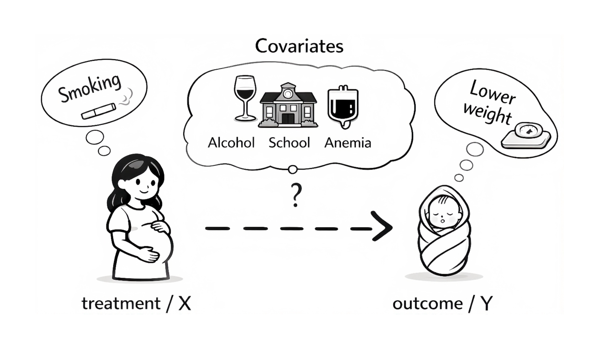
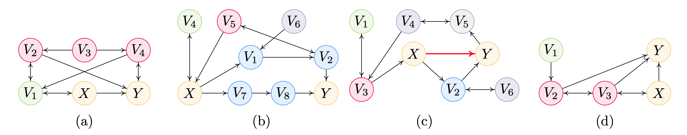

논문 정보 (Paper Information)
- 제목: Local Covariate Selection for Average Causal Effect Estimation without Pretreatment and Causal Sufficiency Assumptions
- 저자: Zeyu Liu, Zheng Li, Feng Xie, Yan Zeng, Hao Zhang, Kun Zhang
- 소속: Beijing Technology and Business University / Shenzhen Institute of Advanced Technology, CAS / Fudan University / Carnegie Mellon University / MBZUAI
- 출처: arXiv:2605.21548v1 [stat.ML], 2026년 5월 20일 (Preprint, May 22, 2026)
- 키워드: 조정집합(adjustment set), MAG/PAG, 마르코프 블랭킷(Markov blanket), 국소 인과 구조 학습(local causal structure learning), 건전성(soundness)/완전성(completeness)
한 줄 요약
“처치 \(X\)의 마르코프 블랭킷 \(\mathrm{MB}(X)\)만 보면 충분하다.”
관측 변수 전체 \(\mathbf{O}\) 안에 유효 조정집합이 하나라도 존재한다면 반드시 \(\mathrm{MB}(X)\) 안에도 하나 존재한다는 국소 경계(local boundary) 정리를 세우고, 그 경계 안에서 조정집합을 찾아내는 세 개의 국소 식별 규칙 R1, R2, R3를 제시합니다. 그 결과 기존 국소 방법들이 의존하던 사전처치(pretreatment) 및 인과충분성(causal sufficiency) 가정을 모두 벗어난, 건전하고 완전한 알고리즘 LCS를 얻습니다.
초록 (Abstract)
논문이 다루는 문제와 기여를 초록 수준에서 먼저 정리해 보겠습니다.
- 문제 설정: 총 인과효과(total causal effect)를 편향 없이(unbiased) 추정하기 위한 공변량 선택(covariate selection) 문제를 다룹니다.
- 기존 방법의 한계: 기존 접근들은 다음 중 하나에 의존합니다.
- 전역(global) 인과 구조 학습: 모든 변수에 대해 그래프를 학습 → 고차원에서 계산 비용이 감당 불가능(computationally prohibitive)합니다.
- 인과충분성(causal sufficiency): 관측 변수들이 잠재 교란자(latent confounder)를 공유하지 않는다는 가정 → 현실에서 자주 위배됩니다.
- 사전처치(pretreatment) 가정: 공변량이 처치나 결과의 영향을 받지 않는다는 가정 → 후처치(post-treatment) 변수가 섞여 있는 실제 데이터에서 비현실적입니다.
- 제안: 위 두 가정(사전처치 + 인과충분성)을 모두 회피하는, 비모수적(nonparametric) 인과효과 추정을 위한 새로운 국소 학습 기반 공변량 선택 방법을 제안합니다.
- 유효 조정집합이 존재하기만 하면 적어도 하나를 포함하는 국소 경계를 이론적으로 특성화합니다.
- 그 경계 안에서 효율적으로 탐색하는 국소 식별 절차(local identification procedure)를 개발합니다.
- 제안 방법이 건전(sound)하고 완전(complete)함을 증명합니다.
- 실험: 다수의 합성 데이터셋과 두 개의 실제 데이터셋에서, 정확한 인과효과 추정 + 대폭 개선된 계산 효율성을 동시에 달성함을 보입니다.
1. 서론 (Introduction)
1.1 문제의 출발점: 무엇을 조정해야 하는가
인과효과 추정은 의학(Rubin, 1974), 경제학(Angrist et al., 1996), 사회과학(Spirtes et al., 2000; Pearl, 2009), 공공정책(Imbens & Rubin, 2015; Hernán & Robins, 2020) 등 여러 분야에서 개입(intervention)의 영향을 이해하는 핵심 도구입니다. 이때 다루는 질문의 형태는 다음과 같습니다.
처치 \(X\)에 개입했을 때 결과 \(Y\)는 어떻게 달라지는가?
가장 널리 쓰이는 전략이 바로 공변량 조정(covariate adjustment)입니다. 관측 변수들의 부분집합 — 조정집합(adjustment set) — 을 찾아 교란 편향(confounding bias)을 제거하는 방식이지요(Pearl, 1993; Maathuis & Colombo, 2015; Perković et al., 2018).
- 인과 구조를 완전히 알고 있다면: 유효한 조정집합은 뒷문 기준(back-door criterion)(Pearl, 1993; 2009)이나 그 일반화(Maathuis & Colombo, 2015; Perković et al., 2018)로 식별할 수 있습니다.
- 그러나 현실에서는: 근본적인 인과 구조를 사전에 아는 경우가 거의 없습니다. 바로 여기서 이 논문의 문제의식이 시작됩니다.

구체적인 예시로 생각해 보겠습니다. 임신 중 산모의 흡연이 신생아 출생 체중에 미치는 효과를 추정한다고 합시다.
- 처치와 결과 외에도 음주 여부, 산모의 학력, 빈혈 같은 건강 상태 등 수많은 부가 변수가 존재하며, 이들은 흡연 행동과 출생 결과 모두에 영향을 줄 수 있습니다.
- 편향 없는 추정치를 얻으려면, 가짜 뒷문 경로(spurious back-door path)를 차단하면서도 부적절한 조정으로 오히려 편향을 만들지 않는 공변량 집합을 신중히 골라야 합니다.
- 현실적인 상황에서는 어떤 변수를 조정해도 안전한지가 불분명합니다. 특히 (i) 일부 공변량이 처치의 영향을 받았을 수 있고, (ii) 다른 변수와 관측되지 않은 교란자를 공유할 수 있을 때 그렇습니다.
1.2 기존 접근의 계보와 한계
인과 그래프를 모를 때 인과효과를 추정하기 위한 데이터 주도(data-driven) 접근들이 여러 갈래로 제안되어 왔습니다. 이를 ① 인과충분성 의존 → ② 잠재변수 허용(전역) → ③ 국소 탐색 순으로 정리해 보겠습니다.
① 인과충분성을 가정하는 전역 방법
- IDA (Maathuis et al., 2009): PC 알고리즘(Spirtes & Glymour, 1991)으로 CPDAG를 학습 → 대응하는 마르코프 동치류(MEC) 안의 DAG들을 열거 → 가능한 인과효과들의 다중집합(multiset)을 추정합니다.
- IDA의 확장 (Perkovic et al., 2017; Fang & He, 2020; Fang et al., 2025): 부분적 엣지 방향이나 조상 관계 같은 배경 지식(background knowledge)을 반영하여 추정 정밀도를 높입니다.
- CovSel (Häggström et al., 2015): 그래프 기준(De Luna et al., 2011)에 기반한 공변량 선택을 수행합니다.
- 한계: 이 방법들의 타당성은 대체로 인과충분성 가정, 즉 관측 변수들의 모든 공통 원인이 측정되어 있다는 가정에 의존합니다. 잠재 교란자가 만연한 실제 상황에서 자주 위배됩니다.
② 잠재변수를 허용하되 여전히 전역인 방법
- LV-IDA (Malinsky & Spirtes, 2017): 일반화 뒷문 기준(generalized back-door criterion)(Maathuis & Colombo, 2015)을 이용해 IDA를 잠재변수 상황으로 확장합니다.
- 후속 연구 (Hyttinen et al., 2015; Wang et al., 2023a; Cheng et al., 2023): 잠재 교란을 다루는 더 효율적인 절차를 개발했습니다.
- 한계: 그럼에도 전역 인과 그래프 학습에 의존합니다. 목표가 특정 처치–결과 쌍 \((X, Y)\)의 효과 추정뿐이라면, 전역 학습은 계산적으로 비싸고 불필요합니다.
③ 국소(local) 탐색 방법
- EHS (Entner et al., 2013): 전체 구조를 학습하지 않고 공변량을 선택합니다. 한계: 모든 변수에 대해 전수 탐색(exhaustive search)을 수행하므로 고차원에서 계산 불가능합니다.
- CEELS (Cheng et al., 2022): 국소 탐색으로 효율을 개선했습니다. 한계: 전역 탐색이라면 찾아냈을 유효 조정집합을 놓칠 수 있습니다(Figure 2(a)).
- LSAS (Li et al., 2025b): 이 프레임워크 내에서 완전(complete)한 방법으로 제안되었습니다.
- 공통 한계: 위 국소 방법들은 모두 사전처치 가정 — 처치도 결과도 공변량에 인과적 영향을 주지 않는다 — 에 의존합니다. 이 가정은 비현실적이며 잘못된 결론으로 이어질 수 있습니다. 사전처치 조건이 위배되면 LSAS도 유효 조정집합을 찾지 못합니다(Figure 2(b)).
- LDP (Local Discovery by Partitioning; Maasch et al., 2024; 2025): 사전처치 가정을 완화하고, 특정 충분조건(sufficient condition) 하에서 유효 조정집합을 식별합니다. 한계: 완전하지 않습니다. 충분조건이 위배되면 해를 반환하지 못하며, 심지어 사전처치 가정이 실제로 성립하는 경우에도 실패할 수 있습니다(Figure 2(d)).
1.3 기존 방법들이 실패하는 지점 (Figure 2)

원 논문은 COSO를 별도로 정의하지 않고 사용합니다. Entner et al. (2013) 및 Cheng et al. (2022)의 용례를 따르면, COSO는 “Cause Or Spouse of the treatment Only”의 약자로, 처치 \(X\)의 원인이거나 배우자(spouse)이면서 결과 \(Y\)에는 \(X\)를 통해서만 관련되는 보조 변수를 뜻합니다. 뒤에서 등장할 R1(Theorem 2)의 보조변수 \(S\)가 바로 이 역할을 수행합니다. 즉 EHS/CEELS 계열의 규칙은 이런 \(S\)가 존재해야 작동하는데, Figure 2(d)는 COSO 변수가 없어도 조정집합이 존재할 수 있음을 보여 주는 반례입니다.
정리하면, 기존 국소 방법들은 다음 셋 중 하나에서 무너집니다.
- 국소성 때문에 놓친다 (CEELS: 불완전).
- 사전처치 가정이 깨지면 무너진다 (CEELS, LSAS).
- 사전처치는 완화했지만 충분조건에만 의존해 불완전하다 (LDP).
이 세 결함을 동시에 해결하는 것이 이 논문의 목표입니다.
1.4 기여 (Contributions)
여기서 건전성(soundness)은 선택된 모든 조정집합이 목표 인과효과 식별에 대해 유효함(거짓 포함이 없음)을 뜻하고, 완전성(completeness)은 데이터로부터 식별 가능한 조정집합이 존재하기만 하면 반드시 하나를 반환함(필수 공변량을 놓치지 않음)을 뜻합니다.
| Method | Soundness | Completeness (local) | Without Pretreatment |
|---|---|---|---|
| CEELS | ✓ | ✗ | ✗ |
| LSAS | ✓ | ✓ | ✗ |
| LDP | ✓ | ✗ | ✓ |
| LCS (Ours) | ✓ | ✓ | ✓ |
논문의 기여는 다음 세 가지입니다.
- ① 이론: 사전처치 가정이나 인과충분성 가정에 의존하지 않고 모든 유효 조정집합을 포함하는 국소 경계를 이론적으로 특성화하고, 그 경계 안에서 탐색하기 위한 국소 식별 규칙을 개발합니다.
- ② 알고리즘: 이 국소 식별 규칙과 국소 구조 학습 기법을 결합하여, 목표 인과효과에 대한 조정집합을 식별하는 데이터 주도 알고리즘 LCS를 제안하고 건전성과 완전성을 증명합니다.
- ③ 실험: 다수의 합성 데이터셋과 두 개의 실제 데이터셋에서 LCS의 효과성과 계산 효율성을 입증합니다.
2. 준비 (Preliminaries)
2.1 그래프 용어와 표기 (Graph Terminology and Notations)
논문 전반의 표기 규약은 다음과 같습니다.
- 집합: 볼드 대문자 (예: \(\mathbf{V}\))
- 그래프: 필기체 폰트 (예: \(\mathcal{G}\))
- 노드/변수: 대문자 (예: \(V\))
2.1.1 유향 그래프 (Directed Graph)
- 그래프 \(\mathcal{G} = (\mathbf{V}, \mathbf{E})\)는 노드 집합 \(\mathbf{V} = \{V_1, \dots, V_n\}\)과 엣지 집합 \(\mathbf{E}\)로 구성됩니다.
- 엣지의 양 끝을 마크(mark)라고 부릅니다. 이 “마크”라는 개념이 이후 PAG의 원(◦)·화살촉(>)·꼬리(−)를 구분하는 기반이 됩니다.
- 유향 혼합 그래프(directed mixed graph): 엣지가 유향(\(\to\)) 또는 양방향(\(\leftrightarrow\))인 그래프입니다.
- \(V_i \to V_j\)이면 \(V_i\)는 \(V_j\)의 부모(parent), \(V_i \leftarrow V_j\)이면 자식(child), \(V_i \leftrightarrow V_j\)이면 배우자(spouse)입니다.
- 경로(path) \(\pi\): 서로 다른 노드의 나열 \(\langle V_0, \dots, V_s \rangle\)로서, 모든 \(0 \le i \le s-1\)에 대해 \(V_i\)와 \(V_{i+1}\)이 인접한 것입니다.
- 유향 경로(directed path): \(V_i\)에서 \(V_j\)로 향하는, 모두 \(V_j\) 방향을 가리키는 유향 엣지로 구성된 경로입니다. 이때 \(V_i\)는 \(V_j\)의 조상(ancestor), \(V_j\)는 \(V_i\)의 후손(descendant)입니다.
- 준 유향 순환(almost directed cycle): \(V_i\)가 \(V_j\)의 배우자이면서 동시에 조상인 경우입니다.
- 유향 순환(directed cycle): \(V_i\)가 \(V_j\)의 자식이면서 동시에 조상인 경우입니다.
2.1.2 MAG와 PAG
잠재변수를 허용하려면 DAG로는 부족하고, 조상 그래프(ancestral graph) 계열이 필요합니다.
- 조상적(ancestral): 유향 혼합 그래프가 유향 순환도 준 유향 순환도 포함하지 않는 경우입니다.
- 최대 조상 그래프(MAG, \(\mathcal{M}\)): 조상 그래프이면서, 인접하지 않은 임의의 두 노드에 대해 그들을 m-분리(m-separate)하는 노드 집합이 존재하는 그래프입니다.
- 직관: 잠재 교란자를 \(\leftrightarrow\)로 “요약”해서 관측 변수만으로 그린 그래프입니다.
- MAG가 유향 엣지만 가지면 DAG가 됩니다.
- 마르코프 동치류(MEC, \([\mathcal{M}]\)): 같은 m-분리 관계를 부호화하는 MAG들의 집합이며, 부분 조상 그래프(PAG, \(\mathcal{P}\))에 의해 유일하게 특성화됩니다.
- PAG의 마크 규약:
- 꼬리 ‘\(-\)’ 또는 화살촉 ‘\(>\)’: 해당 마크가 동치류 내 모든 MAG에서 동일할 때 표시합니다 → 불변(invariant) 정보입니다.
- 원 ‘\(\circ\)’: 그렇지 않을 때, 즉 MAG마다 다를 수 있을 때 표시합니다 → 모호한(ambiguous) 정보입니다.
- 별표 규약: 애스터리스크 \(\ast\)는 PAG의 임의 마크(\(\circ, >, -\)) 또는 MAG의 임의 마크(\(>, -\))를 나타냅니다.
이 논문의 규칙 R2(Theorem 3)는 “\(X\) 주변의 마크에 원이 없다”는 조건 위에 세워집니다. 원이 없다는 것은 \(X\) 주변의 국소 구조가 동치류 전체에 걸쳐 확정되어 있다는 뜻이고, 그렇다면 조정집합을 후보 부분집합을 뒤지지 않고도 직접 구성할 수 있습니다. 뒤에서 이 직관이 다시 등장하니 기억해 두시면 좋습니다.
2.1.3 Possibly 관계와 경로 (Possibly relationship and path)
PAG에는 원(◦) 때문에 “확정된 부모”가 아니라 “가능한 부모”라는 개념이 필요합니다.
- \(\mathcal{P}\) 안의 두 정점 \(V_i, V_j\)에 대해:
- \(V_i \circ\!\!\to V_j\) 이면 \(V_i\)는 \(V_j\)의 가능한 부모(possibly parent)
- \(V_i \leftarrow\!\!\circ\, V_j\) 이면 가능한 자식(possibly child)
- \(V_i \circ\!\!-\!\!\circ V_j\) 이면 이웃(neighbor)
- 가능한 유향 경로(possibly directed path): \(V_i\)에서 \(V_j\)로 가는 경로 중, \(V_i\) 쪽 끝 마크에 화살촉이 없는 엣지들로만 이루어진 경로입니다. 이때 \(V_i\)는 \(V_j\)의 가능한 조상(possible ancestor), \(V_j\)는 \(V_i\)의 가능한 후손(possible descendant)입니다.
- \(\mathcal{G}\)에서 \(V_i\)의 가능한 후손 집합을 \(\mathrm{PossDe}(V_i, \mathcal{G})\)로 표기합니다.
- 충돌자 경로(collider path): \(V_i\)에서 \(V_j\)로 가는 경로 \(\pi\) 위의 모든 통과 노드가 충돌자(collider)인 경로입니다. 예: \(V_i \to V_{i+1} \leftrightarrow \cdots \leftrightarrow V_{j-1} \leftarrow V_j\).
2.1.4 마르코프 블랭킷 (Markov Blanket)
이 논문의 주인공입니다. 충실성(faithfulness)을 가정할 때, MAG에서 정점 \(X\)의 마르코프 블랭킷 \(\mathrm{MB}(X, \mathcal{M})\)은 다음으로 구성됩니다.
- \(X\)의 부모, 자식, 자식의 부모(배우자)
- \(X\)의 지구(district)와 \(X\)의 자식들의 지구
- 그리고 이 지구들에 속한 각 정점의 부모들
여기서 정점 \(V\)의 지구(district)란 양방향 엣지(\(\leftrightarrow\))만을 따라 \(V\)로부터 도달 가능한 모든 정점의 집합입니다.
- DAG: \(\mathrm{MB}(X) = \{\)부모, 자식, 자식의 부모(배우자)\(\}\) — 익숙한 정의입니다.
- MAG: 잠재 교란자를 표현하는 \(\leftrightarrow\) 때문에 지구(district) 항이 추가로 붙습니다. 즉 잠재 교란자를 공유하는 변수들이 통째로 MB에 편입됩니다. LCS가 인과충분성 없이도 작동하는 이유가 바로 이 확장된 MB 정의에 있습니다.
2.1.5 표기 정리 (Notations)
| 표기 | 의미 |
|---|---|
| \(\mathrm{Adj}(V_i)\) | \(V_i\)에 인접한 노드 집합 |
| \(\mathrm{Pa}(V_i)\) | \(V_i\)의 부모 집합 |
| \(\mathrm{De}(V_i)\) | \(V_i\)의 후손 집합 |
| \(\mathrm{PossDe}(V_i)\) | \(V_i\)의 가능한 후손 집합 |
| \(\mathrm{Forb}(X, Y)\) | 금지 집합: \(\mathrm{Forb}(X,Y) = \{W' \in \mathbf{V} \mid W' \in \mathrm{De}(W),\ W \text{는 } \mathcal{G} \text{에서 } X \text{에서 } Y \text{로 가는 인과 경로 위에 있음}\}\) |
| \(X \perp\!\!\!\perp Y \mid \mathbf{Z}\) | \(\mathbf{Z}\)가 주어졌을 때 \(X\)와 \(Y\)가 통계적으로 독립 (Dawid, 1979) |
| \(X \not\perp\!\!\!\perp Y \mid \mathbf{Z}\) | 위의 부정 |
| \(\mathrm{MB}^+(X)\) | \(\mathrm{MB}^+(X) = \{\mathrm{MB}(X) \cup X\}\) (확장 마르코프 블랭킷) |
| w.r.t. | “with respect to” |
2.1.6 정의 1: 가시적 엣지 (Definition 1. Visible Edges)
Definition 1 (Visible Edges) (Zhang, 2008a). MAG \(\mathcal{M}\) / PAG \(\mathcal{P}\)가 주어졌을 때, 유향 엣지 \(X \to Y\)가 가시적(visible)이라 함은, \(Y\)에 인접하지 않은 노드 \(S\)가 존재하여 다음 중 하나가 성립하는 경우를 말합니다.
- \(S\)와 \(X\) 사이에 \(X\)로 들어오는(into \(X\)) 엣지가 존재하거나,
- \(S\)와 \(X\) 사이에 \(X\)로 들어오는 충돌자 경로가 존재하고, 그 경로 위의 모든 비-끝점 노드가 \(Y\)의 부모인 경우.
그렇지 않으면 \(X \to Y\)는 비가시적(invisible)입니다.
왜 가시성이 필요한가? 잠재변수가 있는 세계에서 \(X \to Y\) 엣지는 “순수한 직접 효과”일 수도 있지만, \(X\)와 \(Y\) 사이의 잠재 교란이 그 엣지에 섞여 있을 수도 있습니다. 가시성은 “이 엣지에는 숨은 교란이 섞여 있지 않다”를 관측 가능한 그래프 특징만으로 보증해 주는 조건입니다. 그래서 뒤에 나올 GAC의 첫 번째 조건(순응성, amenability)이 가시성을 요구합니다.
Example 1.
- Figure 2(c): 노드 \(V_3\)가 첫 번째 조건의 \(S\) 역할을 할 수 있습니다. \(V_3\)는 \(Y\)에 인접하지 않고, \(V_3\)와 \(X\) 사이의 엣지가 \(X\)로 들어오도록 방향지어져 있습니다. 따라서 \(X \to Y\)는 가시적입니다.
- Figure 2(d): 노드 \(V_1\)이 두 번째 조건의 \(S\) 역할을 합니다. \(V_1\)에서 \(X\)로 들어오는 충돌자 경로가 존재하고, 그 경로 위의 모든 비-끝점 노드가 \(Y\)의 부모입니다. 따라서 \(X \to Y\)는 가시적입니다.
2.1.7 정의 2: 일반화 조정 기준 (Definition 2. Generalized Adjustment Criterion, GAC)
Definition 2 (GAC) (Perković et al., 2018). \(\mathbf{O}\) 위의 MAG 또는 PAG \(\mathcal{G}\)에서 서로 다른 두 노드 \(X, Y\)를 생각합시다. 노드 집합 \(\mathbf{Z} \subseteq \mathbf{O} \setminus \{X, Y\}\)가 \(\mathcal{G}\)에서 \((X, Y)\)에 대해 일반화 조정 기준을 만족한다는 것은 다음 셋이 모두 성립함을 뜻합니다.
- 순응성(amenability): \(\mathcal{G}\)가 \((X, Y)\)에 대해 조정 순응적(adjustment amenable)이다. 즉, \(X\)에서 \(Y\)로 가는 모든 가능한 유향 경로의 첫 번째 엣지가 가시적이다.
- 금지 집합 배제: \(\mathbf{Z} \cap \mathrm{Forb}(X, Y) = \emptyset\). 즉 \(\mathbf{Z}\)는 \(X\)에서 \(Y\)로 가는 임의의 가능한 유향 경로 위 노드의 후손을 포함할 수 없다.
- 비인과 경로 차단: \(X\)에서 \(Y\)로 가는 모든 확정 상태(definite status) 비인과 경로가 \(\mathbf{Z}\)에 의해 차단된다.
이 조건들이 성립하면 \(X\)의 \(Y\)에 대한 총 인과효과가 식별 가능하며, 다음으로 주어집니다.
\[ f(y \mid do(x)) = \begin{cases} f(y \mid x), & \mathbf{Z} = \emptyset \text{ 인 경우} \\[6pt] \displaystyle\int_{\mathbf{z}} f(y \mid x, \mathbf{z})\, f(\mathbf{z})\, d\mathbf{z}, & \text{그 외의 경우} \end{cases} \tag{1} \]
논문은 “GAC를 만족하는 집합”을 이후 “유효 조정집합(valid adjustment set)”이라는 일반 용어로 통일해서 부릅니다. 본 포스트도 그 관례를 따르겠습니다.
조정 공식 (1)의 단계별 유도
식 (1)은 결과만 제시되어 있으니, 가정 → 정의 → 중간 단계 → 최종식의 흐름으로 풀어 보겠습니다. (MAG/PAG 상의 엄밀한 버전은 Perković et al. (2018)에 있고, 여기서는 뒷문 조정의 표준 논증을 따라갑니다.)
1단계 (전확률 법칙, law of total probability). \(\mathbf{Z}\)에 대해 주변화(marginalize)합니다. 조건부 확률의 정의 \(f(y, \mathbf{z}) = f(y \mid \mathbf{z}) f(\mathbf{z})\)를 개입 분포 \(do(x)\) 하에서 적용하면,
\[ f(y \mid do(x)) = \int_{\mathbf{z}} f(y \mid do(x), \mathbf{z})\, f(\mathbf{z} \mid do(x))\, d\mathbf{z} \]
2단계 (금지 집합 배제 조건 → 두 번째 항 단순화). GAC의 조건 2에 의해 \(\mathbf{Z} \cap \mathrm{Forb}(X, Y) = \emptyset\)이므로, \(\mathbf{Z}\)의 어떤 원소도 \(X\)에서 \(Y\)로 가는 인과 경로 위 노드의 후손이 아닙니다. 즉 \(X\)에 개입해도 \(\mathbf{Z}\)의 분포는 바뀌지 않습니다.
\[ f(\mathbf{z} \mid do(x)) = f(\mathbf{z}) \]
3단계 (비인과 경로 차단 조건 → 첫 번째 항 단순화). GAC의 조건 3에 의해 \(\mathbf{Z}\)가 \(X \to Y\)의 모든 비인과 경로를 차단하고, 조건 1(순응성)에 의해 \(X\)에서 나가는 첫 엣지가 가시적이므로 \(X\)와 \(Y\) 사이에 잠재 교란이 남아 있지 않습니다. 따라서 \(\mathbf{Z}\)로 조건화한 뒤에는 \(X\)를 관측하는 것과 \(X\)에 개입하는 것이 동일한 \(Y\) 분포를 줍니다.
\[ f(y \mid do(x), \mathbf{z}) = f(y \mid x, \mathbf{z}) \]
4단계 (최종식). 2·3단계를 1단계에 대입하면,
\[ f(y \mid do(x)) = \int_{\mathbf{z}} f(y \mid x, \mathbf{z})\, f(\mathbf{z})\, d\mathbf{z} \]
를 얻습니다. 특수 경우 \(\mathbf{Z} = \emptyset\)이면 적분이 사라져 \(f(y \mid do(x)) = f(y \mid x)\)가 되며, 이로써 식 (1)의 두 갈래가 모두 유도됩니다. \(\blacksquare\)
- 조건 1 (순응성): 잠재 교란이 \(X \to Y\) 엣지에 숨어 있는 경우를 배제합니다. 이게 깨지면 어떤 \(\mathbf{Z}\)로도 식별 불가능합니다.
- 조건 2 (금지 집합): 매개변수(mediator)나 그 후손을 조정하는 것을 막습니다. 이게 깨지면 과대조정 편향(overadjustment bias) 또는 충돌자 편향(collider bias)이 발생합니다. 사전처치 가정을 버리는 순간 이 조건이 진짜로 중요해집니다.
- 조건 3 (차단): 우리가 익히 아는 뒷문 차단입니다.
2.2 문제 정의 (Problem Definition)
- 모형: Pearl (2009)의 구조적 인과 모형(SCM)을 상정합니다. 변수 집합 \(\mathbf{V} = \mathbf{O} \cup \mathbf{U}\)가 결합확률분포 \(P(\mathbf{V})\)와 연관됩니다.
- \(\mathbf{O}\): 관측 변수 집합
- \(\mathbf{U}\): 측정되지 않은 잠재 변수 집합
- 각 변수 \(V_i \in \mathbf{V}\)는 DAG \(\mathcal{D}\) 안의 부모들과 오차항 \(\varepsilon_i\)에 의존하는 함수 \(f_i\)로 생성됩니다.
\[ V_i = f_i(\mathrm{Pa}(V_i, \mathcal{D}), \varepsilon_i) \]
여기서 \(\mathrm{Pa}(V_i, \mathcal{D})\)는 \(\mathcal{D}\)에서 \(V_i\)의 부모 집합이며, 오차항 \(\varepsilon_i\)들은 서로 독립이라고 가정합니다.
Goal. 관측 변수 \(\mathbf{O}\)만 주어지고 사전처치 가정과 인과충분성 가정이 모두 위배될 수 있는 상황에서, 처치 변수 \(X \in \mathbf{O}\)가 결과 변수 \(Y \in \mathbf{O}\)에 미치는 평균 인과효과를 추정하는 문제를 다룹니다. 구체적으로, (i) \(X\)가 \(Y\)에 인과효과를 갖는지 판정하고, (ii) 갖는다면 국소 학습(local learning)을 이용해 그 효과 추정을 위한 유효 조정집합 \(\mathbf{Z}\)를 식별하는 것이 목표입니다.
3. 공변량 선택을 위한 국소 이론 (Local Theory for Covariate Selection)
이 절에서는 잠재변수가 존재하는 상황에서도, 관측 데이터로부터 얻은 국소 정보만으로 \(X\)의 \(Y\)에 대한 인과효과를 추정하기 위한 이론적 기반을 다룹니다.
핵심 난점: 관측 데이터는 유일한 인과 구조가 아니라 인과 그래프의 마르코프 동치류만을 결정합니다. 동치류 내의 서로 다른 그래프들이 \(X\)와 \(Y\) 사이에 서로 다른 인과 관계를 함의할 수 있습니다(Entner et al., 2013). 그 결과 인과효과 추정은 다음 세 가지 경우로 갈라집니다.
- Case 1: \(X\)가 \(Y\)에 인과효과를 가지며, 그 효과가 유효 조정집합을 통해 식별 가능하다. → §3.1
- Case 2: \(X\)가 \(Y\)에 인과효과가 없다. → §3.2
- Case 3: \(X\)가 \(Y\)에 인과효과를 가질 수도 있고 아닐 수도 있으며, 관측 데이터만으로는 식별 불가능하다. → §3.3
3.1 식별 가능한 인과효과 (Identifiable Causal Effect, Case 1)
3.1.1 정리 1: 국소 경계 (Theorem 1)
목표 변수쌍 \((X, Y)\)에 대해, 먼저 \(\mathrm{MB}(X)\)를 이용해 유효 조정집합의 국소 경계를 특성화합니다.
Theorem 1. \(\mathbf{O}\)를 관측 변수 집합, \((X, Y)\)를 \(\mathbf{O}\) 안의 목표 변수쌍이라 하자. 그러면
\[\exists\, \mathbf{Z} \subseteq \mathbf{O} \text{ 가 } (X,Y) \text{에 대한 유효 조정집합} \iff \exists\, \mathbf{Z}' \subseteq \mathrm{MB}(X) \text{ 가 } (X,Y) \text{에 대한 유효 조정집합}\]
이 정리가 말하는 것:
- (\(\Rightarrow\) 방향, 완전성의 근거): 전체 관측 변수 집합 \(\mathbf{O}\) 안에 \((X,Y)\)에 대한 조정집합이 존재한다면, 전적으로 \(\mathrm{MB}(X)\) 안에 포함된 조정집합도 반드시 존재합니다.
- (\(\Leftarrow\)의 대우, 탐색 종료의 근거): 역으로 \(\mathrm{MB}(X)\)의 어떤 부분집합도 유효 조정집합이 되지 못한다면, \(\mathbf{O}\)의 어떤 부분집합도 \((X,Y)\)에 대한 유효 조정집합이 될 수 없습니다.
즉 \(\mathrm{MB}(X)\) 밖은 볼 필요가 없다는 것이 정리 1의 메시지이며, 이것이 LCS 전체를 지탱하는 국소성(locality)의 정당화입니다. \(|\mathrm{MB}(X)| \ll |\mathbf{O}|\)이므로 탐색 공간이 극적으로 줄어듭니다.
3.1.2 Remark 1: 왜 \(\mathrm{MB}(Y)\)가 아니라 \(\mathrm{MB}(X)\)인가
Remark 1. 사전처치 가정에 의존하고 \(\mathrm{MB}(Y)\)로 정의되는 (Li et al., 2025a)의 국소 경계와 달리, 본 논문의 국소 경계는 \(\mathrm{MB}(X)\)로 특성화됩니다. 특히 \(\mathrm{MB}(Y)\)는 더 이상 유효 조정집합을 제공한다고 보장되지 않습니다(반례는 Example 2).
직관적 이유를 짚어 보겠습니다.
- 사전처치 가정이 있으면 모든 공변량이 \(X\)와 \(Y\)의 비후손이므로, \(\mathrm{MB}(Y)\) 안에는 매개변수(mediator)가 들어올 수 없습니다. 그래서 \(\mathrm{MB}(Y)\)가 안전한 경계로 기능합니다.
- 사전처치 가정을 버리면 \(\mathrm{MB}(Y)\)가 매개변수로 가득 찰 수 있습니다. 매개변수는 \(\mathrm{Forb}(X,Y)\)에 속하므로 GAC 조건 2에 의해 조정집합에 들어갈 수 없습니다. 즉 경계 자체가 무너집니다.
- 반면 \(\mathrm{MB}(X)\)는 (증명에서 보듯) \(X\)에서 나가는 가시적 유향 엣지를 제거한 그래프 \(\mathcal{P}_{\overline{X}}\)에서 \(X\)의 자식이 없어지므로 금지 집합 조건이 자동으로 만족됩니다.
Example 2. Figure 2(b)의 MAG와 그에 대응하는 Figure 3의 PAG를 봅시다.
\[\mathrm{MB}(Y) = \{V_2, V_8\}, \qquad \mathrm{MB}(X) = \{V_1, V_4, V_5, V_6, V_7\}\]
- \(V_2\)와 \(V_8\)은 모두 \(X\)에서 \(Y\)로 가는 인과 경로 위에 놓여 있으므로, 어떤 유효 조정집합에도 포함될 수 없습니다.
- 반면 \(\{V_5\} \subset \mathrm{MB}(X)\)는 \(X\)의 \(Y\)에 대한 총 인과효과 추정을 위한 유효 조정집합입니다.
결론: 사전처치 가정이 성립하지 않으면 \(\mathrm{MB}(Y)\)는 유효 조정집합의 국소 경계를 특성화하는 데 완전하지 않은 반면, \(\mathrm{MB}(X)\)는 여전히 완전합니다.

3.1.3 정리 2: R1 — 보조변수를 이용한 국소 탐색
경계를 정했으니, 이제 그 경계 안에서 유효 조정집합을 국소적으로 식별하는 문제가 남습니다.
Theorem 2 (R1 for Locally Searching Adjustment Sets). \(\mathcal{P}\)를 \(\mathbf{O}\) 위의 PAG, \((X, Y)\)를 순서가 있는 목표 변수쌍이라 하자. 부분집합
\[\mathbf{Z} \subseteq \mathrm{MB}(X) \setminus \mathrm{PossDe}(X, \mathcal{P})\]
는, 다음을 만족하는 변수 \(S \in \mathrm{MB}(X) \setminus (\{Y\} \cup \mathrm{Ch}(X, \mathcal{P}))\)가 존재하면 \((X, Y)\)에 대한 유효 조정집합이다.
- (i) \(S \not\perp\!\!\!\perp Y \mid \mathbf{Z}\)
- (ii) \(S \perp\!\!\!\perp Y \mid \mathbf{Z} \cup \{X\}\)
논문이 제시하는 직관:
- 조건 (i): \(\mathbf{Z}\)가 주어졌을 때 \(S\)에서 \(Y\)로 가는 활성 경로(active path)가 존재함을 뜻합니다.
- 조건 (ii): 조건화 집합에 \(X\)를 추가하면 그 활성 경로가 모두 사라짐을 보장합니다.
- 둘을 합치면: \(\mathbf{Z}\) 하에서 \(S \to Y\)로 흐르는 모든 활성 경로는 반드시 \(X\)를 통과해야 하며, \(X\)를 추가하는 순간 그것들이 차단됩니다. 따라서 \(\mathbf{Z}\)는 GAC를 만족하는 유효 조정집합입니다.
Entner et al. (2013)의 EHS도 본질적으로 같은 형태의 보조변수 규칙을 씁니다. 차이는 탐색 범위입니다.
- EHS: \(S\)와 \(\mathbf{Z}\)를 전체 \(\mathbf{O}\)에서 찾음 → \(O(2^{|\mathbf{O}|})\) 전수 탐색
- LCS의 R1: \(S \in \mathrm{MB}(X) \setminus (\{Y\} \cup \mathrm{Ch}(X,\mathcal{P}))\), \(\mathbf{Z} \subseteq \mathrm{MB}(X) \setminus \mathrm{PossDe}(X, \mathcal{P})\) → 정리 1이 이 축소를 정당화합니다.
\(\mathbf{Z}\)에서 \(\mathrm{PossDe}(X, \mathcal{P})\)를 빼는 이유는 GAC 조건 2(금지 집합 배제)를 자동으로 만족시키기 위함이며, \(S\)에서 \(\mathrm{Ch}(X, \mathcal{P})\)와 \(\{Y\}\)를 빼는 이유는 \(S\)가 \(X\)의 후손 쪽에서 오는 정보 통로가 되지 않도록 하기 위함입니다.
3.1.4 R1의 불완전성과 Example 3
R1만으로는 유효 조정집합을 완전히 식별할 수 없습니다. 다음 예시가 그 한계를 드러냅니다.
Example 3. Figure 2(c)의 MAG와 대응 PAG(Figure 4)를 봅시다.
\[\mathrm{Ch}(X, \mathcal{P}) = \{V_2, Y\}, \quad \mathrm{MB}(X) = \{V_2, V_3, V_6, Y\}, \quad \mathrm{PossDe}(X, \mathcal{P}) = \{V_2, V_5, Y\}\]
조건부 독립성 검정을 위해 \(\{S\} \cap \mathbf{Z} = \emptyset\)이 요구된다는 점을 고려하면, 어떤 \(S \in \{V_3, V_6\}\)과 어떤 \(\mathbf{Z} \subseteq \{V_3, V_6\}\)의 조합도 Theorem 2의 조건을 만족하지 못합니다. 그럼에도 주어진 PAG로부터 \(\{V_3\}\)은 \((X, Y)\)에 대한 유효 조정집합입니다.
왜 막히는지 계산해 보겠습니다.
- \(S\)의 후보: \(\mathrm{MB}(X) \setminus (\{Y\} \cup \mathrm{Ch}(X, \mathcal{P})) = \{V_2, V_3, V_6, Y\} \setminus \{Y, V_2\} = \{V_3, V_6\}\)
- \(\mathbf{Z}\)의 후보: \(\mathrm{MB}(X) \setminus \mathrm{PossDe}(X, \mathcal{P}) = \{V_2, V_3, V_6, Y\} \setminus \{V_2, V_5, Y\} = \{V_3, V_6\}\)
- 문제: \(S\)와 \(\mathbf{Z}\)가 동일한 2원소 풀에서 뽑히는데, 조건부 독립성 검정의 성질상 \(S \notin \mathbf{Z}\)여야 합니다. 가능한 조합은 \((V_3, \emptyset), (V_3, \{V_6\}), (V_6, \emptyset), (V_6, \{V_3\})\) 넷뿐이며, 어느 것도 R1의 두 조건을 만족하지 않습니다.
- 그런데 정답은 \(\mathbf{Z} = \{V_3\}\)입니다. 즉 정답 \(\mathbf{Z}\)가 유일한 유효 보조변수 \(S\)와 겹쳐 버려서 R1이 그것을 “증인”으로 쓸 수 없는 것입니다.

3.1.5 정의 3과 정리 3: R2 — 확정된 국소 구조에서 직접 구성
이 예외적인 경우들을 자세히 들여다보면 공통된 구조적 성질이 발견됩니다.
\(X\)에 인접한 모든 엣지에 대해, \(X\)쪽 끝점의 마크가 항상 확정되어 있다 (즉 원 ◦ 이 아니다).
이 통찰이 곧바로 Theorem 3의 동기가 됩니다. 그 전에 새로운 정의가 필요합니다.
Definition 3. \(\mathcal{P}_{\mathrm{MB}^+(X)}\)를 \(\mathrm{MB}^+(X)\)의 유도 부분그래프(induced subgraph)라 하자. \(X\)의 확정적 비-충돌자 가능 부모(definitely non-collider possible parents)란, \(V_0 \circ\!\!\to X\) 형태의 엣지로 \(X\)에 인접하면서, 이 부분그래프 내의 어떤 경로에서도 \(V_0\)가 충돌자로 작용하지 않는 노드들을 말한다. 이 집합을 \(\mathrm{NCPa}(X, \mathcal{P}_{\mathrm{MB}^+(X)})\)로 표기한다.
정의 3을 뜯어 보겠습니다.
- \(V_0 \circ\!\!\to X\): \(X\)쪽 마크는 화살촉(확정), \(V_0\)쪽 마크는 원(모호)입니다. 즉 밑바탕 MAG에서 이 엣지는 \(V_0 \to X\)(부모)일 수도, \(V_0 \leftrightarrow X\)(배우자)일 수도 있습니다.
- 어느 쪽이든 \(V_0\)는 \(X\)의 후손이 아닙니다 (엣지가 \(X\)로 들어오므로 \(X\)는 \(V_0\)의 조상일 수 없습니다). → \(\mathrm{Forb}(X,Y)\)에 속하지 않아 조정해도 안전합니다.
- “충돌자로 작용하지 않는다”는 조건이 왜 필요한가? \(V_0\)가 어떤 경로 위에서 충돌자라면, \(V_0\)로 조건화하는 순간 그 경로가 열려 버립니다(충돌자 편향). 이 조건은 \(V_0\)를 조정집합에 넣어도 새 경로가 열리지 않음을 보장합니다.
Theorem 3 (R2 for Locally Searching Adjustment Sets). \(\mathcal{P}\)를 \(\mathbf{O}\) 위의 PAG, \((X, Y)\)를 순서가 있는 목표 변수쌍이라 하자. \(X\) 주변의 국소 인접 구조에서 \(X\)쪽 끝점의 마크가 항상 확정되어 있다고 가정하자. \(X\)에서 \(Y\)로의 인과효과가 식별 가능하다면, 집합
\[\mathbf{Z} = \mathrm{Pa}(X) \cup \mathrm{NCPa}(X, \mathcal{P}_{\mathrm{MB}^+(X)})\]
는 \(X\)의 \(Y\)에 대한 총효과 식별을 위한 \((X, Y)\)에 대한 유효 조정집합이며, \(\mathbf{Z} \subseteq \mathrm{MB}(X) \setminus \mathrm{PossDe}(X, \mathcal{P})\)를 만족한다.
R2의 핵심 아이디어: R1처럼 부분집합을 탐색하는 것이 아니라, 조정집합을 직접 구성(construct)합니다.
- \(\mathrm{Pa}(X)\): 확정된 부모 — 모든 동치 MAG에서 부모입니다.
- \(\mathrm{NCPa}(X, \mathcal{P}_{\mathrm{MB}^+(X)})\): 어떤 MAG에서는 부모일 수도 있는 노드들 중 조정해도 안전한 것들입니다.
- 둘의 합집합은 (증명 B.3에서 보듯) 동치류 내 모든 MAG에서의 \(X\)의 부모 집합들의 합집합입니다. 즉 어느 MAG가 참이든 상관없이 뒷문을 전부 막는 집합을 한 방에 만드는 셈입니다.
Theorem 3은 인과효과가 존재하는데 Theorem 2가 유효 조정집합을 찾는 데 실패하는 경우를 다루며, 그때 유효 조정집합을 제공합니다.
Example 4. 다시 Figure 4를 봅시다. R1을 적용할 수 없을 때 R2에 부합하는 상황은 \(X\) 주변의 마크가 확정되어 있으나 \(S\)와 \(\mathbf{Z}\)가 겹쳐 버리는 경우입니다. 이때 Rule 2를 사용하여 유효 조정집합 \(\mathbf{Z} = \{V_3\}\)을 결정할 수 있습니다.
3.2 인과효과 없음 (No Causal Effect, Case 2)
다음으로 인과효과가 0으로 식별되는 시나리오를 다룹니다. 관측 데이터의 국소 구조적 특징을 분석하여, \(X\)가 \(Y\)에 인과효과를 갖지 않는다고 명확히 결론지을 수 있는 규칙을 유도합니다.
Theorem 4 (R3 for Locally Identifying No Causal Effect). \(\mathcal{P}\)를 \(\mathbf{O}\) 위의 PAG, \((X, Y)\)를 순서가 있는 목표 변수쌍이라 하자. 다음을 만족하는 부분집합 \(\mathbf{Z} \subseteq \mathrm{MB}(X)\) (단 \(\mathbf{Z} \cap \mathrm{PossDe}(X, \mathcal{P}) = \emptyset\))와 변수 \(S \in \mathrm{MB}(X) \setminus (\{Y\} \cup \mathrm{Ch}(X, \mathcal{P}))\)가 존재하면, \(X\)는 \(Y\)에 인과효과를 갖지 않는다.
- (i) \(X \perp\!\!\!\perp Y \mid \mathbf{Z}\), 또는
- (ii) \(S \not\perp\!\!\!\perp X \mid \mathbf{Z}\) 이면서 \(S \perp\!\!\!\perp Y \mid \mathbf{Z}\)
조건 (i)의 해석:
- \(X\)의 후손을 제외한 국소 변수들로 조건화했더니 \(X\)와 \(Y\) 사이의 모든 활성 경로가 차단되었다는 뜻입니다.
- \(\mathbf{Z}\)가 \(X\)의 후손을 포함하지 않으므로, 인과 경로를 실수로 막아 버렸을 가능성이 없습니다. 그런데도 독립이라면 애초에 인과 경로가 없었던 것입니다. → 총 인과효과 \(= 0\).
조건 (ii)의 해석 (보완적 구조 패턴):
- PAG에서 원 마크는 모호한 엣지 방향을 뜻하며, 이것이 \(X\)와 \(Y\) 사이에 가짜 연관(spurious association)을 낳을 수 있습니다.
- 이 경우 \(S \not\perp\!\!\!\perp X \mid \mathbf{Z}\) 이면서 \(S \perp\!\!\!\perp Y \mid \mathbf{Z}\)인 변수 \(S\)가 존재합니다.
- 이는 \(\mathbf{Z}\) 하에서 정보가 \(S \to X\)로는 흐르지만 \(Y\)까지는 전파되지 않음을 뜻합니다.
- 따라서 \(X\)와 \(Y\) 사이의 연관은 \(X\)에서 \(Y\)로 가는 유향 인과 경로로는 설명될 수 없으며, 그러므로 \(X\)는 \(Y\)에 인과효과가 없습니다.
\(S \to \cdots \to X\)로 정보가 흐르는데 \(S\)와 \(Y\)는 독립이라면, 만약 \(X \to \cdots \to Y\) 유향 경로가 있었다면 그 둘을 이어 붙여 \(S \to \cdots \to X \to \cdots \to Y\)라는 활성 경로가 생겼을 것이고, 그러면 \(S \not\perp\!\!\!\perp Y \mid \mathbf{Z}\)여야 합니다. 모순이므로 그런 유향 경로는 없습니다. (이것이 정확히 증명 B.4 case (ii)의 논리입니다.)

Example 5. Figure 2(d)의 MAG와 대응 PAG(Figure 5)를 봅시다. Figure 5에서 두 가지 변수 배정을 생각합니다.
첫째, \((X, Y) = (V_2, V_4)\): Theorem 4의 첫 번째 경우에 따라 \(X \perp\!\!\!\perp Y \mid \emptyset\)임을 관찰합니다. 이 주변 독립성이 곧바로 \(X\)의 \(Y\)에 대한 인과효과가 0임을 함의합니다.
둘째, \((X, Y) = (V_2, V_3)\): Theorem 4의 두 번째 경우를 만족합니다. 구체적으로 \(S = V_1\)이 다음을 충족합니다.
\[S \not\perp\!\!\!\perp X \mid \emptyset \quad \text{그리고} \quad S \perp\!\!\!\perp Y \mid \emptyset\]
따라서 정리에 의해 \(X\)의 \(Y\)에 대한 인과효과가 0이라고 결론지을 수 있습니다.
3.3 식별 불가능 (Non-Identifiable, Case 3)
왜 Case 3이 식별 불가능한지부터 설명하겠습니다.
- 표준 가정 하에서 관측 데이터는 인과 구조의 마르코프 동치류만을 결정하며, 이는 통상 PAG로 표현됩니다. PAG는 밑바탕 분포가 함의하는 모든 조건부 독립성을 부호화합니다(Spirtes et al., 2000; Zhang, 2008a; Entner et al., 2013).
- 주어진 동치류 안에서 서로 다른 인과 구조들이 관측 가능한 (독립/종속) 관계에는 모두 일치하면서도, 유향 엣지 \(X \to Y\)의 존재 여부에서는 서로 다를 수 있습니다.
- 그 결과, 어떤 인과 관계는 관측 데이터만으로는 유일하게 식별될 수 없습니다.
Theorem 5. 인과 마르코프(causal Markov) 가정과 충실성(faithfulness) 가정 하에서, \(X\)의 \(Y\)에 대한 인과효과는 Theorem 2, Theorem 3, Theorem 4로 특성화되는 세 가지 식별 가능한 경우 중 하나에 반드시 속한다. 이 조건들 중 어느 것도 성립하지 않으면, 그 효과는 관측 가능한 조건부 독립·종속 관계로부터 식별 불가능하다.
이 정리는 식별 가능성의 경계(identifiability boundary)를 규정합니다.
| 발동 규칙 | 결론 |
|---|---|
| R1 (Theorem 2) 또는 R2 (Theorem 3) | Identifiable Non-Zero Effect (식별 가능한 비영 효과) |
| R3 (Theorem 4) | Identifiable Zero Effect (식별 가능한 영 효과) |
| R1–R3 모두 불가 | Non-Identifiable (이론적으로 식별 불가능) |
마지막 행이 중요합니다. R1–R3 중 어느 것도 적용되지 않으면, 관측 변수들 사이의 조건부 독립·종속 관계에만 의존해서는 \(X\)가 \(Y\)에 인과효과를 갖는지 확정하는 것이 불가능합니다. 이때 효과는 이론적으로 식별 불가능합니다.
4. 실용 알고리즘 (Practical Algorithm)
앞서의 국소 식별 규칙들을 활용하여 LCS (Local Covariate Selection) 알고리즘을 제안합니다. LCS는 변수 \(X\)가 다른 변수 \(Y\)에 인과효과를 갖는지 판정하고, 갖는다면 그 효과를 편향 없이 추정합니다.
4.1 알고리즘 개요
순서가 있는 변수쌍 \((X, Y)\)가 주어지면, 알고리즘은 다음 두 개의 핵심 단계로 구성됩니다.
- Step 1: 임의의 국소 학습 알고리즘을 사용하여 \(X\) 주변의 국소 구조를 학습합니다.
- Step 2: 제안된 규칙들(R1–R3)을 적용하여 유효 조정집합을 결정하고 인과효과를 추정합니다.
알고리즘은 \(\Theta\)에 \(X\)의 \(Y\)에 대한 인과효과 추정치를 저장합니다.
| \(\Theta\)의 값 | 대응 | 해석 |
|---|---|---|
| \(\Theta\) = null (\(\emptyset\)) | Case 3 | 가용한 관측 데이터만으로는 \(X\)가 \(Y\)에 인과효과를 갖는지 결정할 수 없음 (식별 불가능) |
| \(\Theta = 0\) | Case 2 | \(X\)는 \(Y\)에 인과효과가 없음 |
| \(\Theta \ne 0\) | Case 1 | 비영 인과효과이며 그 추정치를 나타냄 |
사용되는 국소 구조 학습 알고리즘은 (Li et al., 2025b)의 것이며, 상세는 부록 C.2의 Algorithm 2에 있습니다.
4.2 Algorithm 1: LCS
Algorithm 1: Local Covariate Selection (LCS)
────────────────────────────────────────────────────────────────────
input : 목표 변수쌍 (X, Y), 관측 데이터 O
1: G_X ← 선택한 국소 구조 학습 알고리즘 # Step 1
2: MB(X), Pa(X, P), NCPa(X, P_{MB+(X)}),
3: Ch(X, P), PossDe(X, P) ← G_X 로부터 획득
4: Θ ← ∅ # 인과효과 추정치 초기화
5: if S 와 Z 가 R1 (Theorem 2) 을 만족하면 then # Step 2
6: Θ ← θ # Case 1: 식별 가능
7: return Θ
8: end if
9: if X 주변의 국소 구조가 R2 (Theorem 3) 를 만족하면 then
10: Z ← Pa(X) ∪ NCPa(X, P_{MB+(X)})
11: Θ ← θ # Case 1: 식별 가능
12: return Θ
13: end if
14: if S 와 Z 가 R3 (Theorem 4) 를 만족하면 then
15: return Θ ← 0 # Case 2: 인과효과 0
16: end if
17: return Θ # 비어 있는 Θ 는 Case 3 (식별 불가능) 을 뜻함
────────────────────────────────────────────────────────────────────규칙 적용 순서에 주목하시기 바랍니다. R1 → R2 → R3 순으로 검사하며, 먼저 성공하는 규칙에서 즉시 반환(early return)합니다. R1이 탐색 기반(부분집합을 뒤짐)이고 R2가 구성 기반(직접 조립)이므로, 탐색이 되는 상황이면 탐색을 쓰고, 막히면 구조의 확정성을 이용해 조립하는 흐름입니다.
4.3 정리 6: 건전성과 완전성
Theorem 6 (The Soundness and Completeness of Algorithm 1). 오라클 조건부 독립성 검정(oracle conditional independence test)을 가정하자. 인과 마르코프 및 충실성 가정 하에서, R1, R2, R3 중 어느 하나라도 적용되면 LCS 알고리즘은 인과효과 \(\Theta\)를 올바르게 반환한다. 어느 규칙도 적용되지 않으면, 관측 변수들 사이의 검정 가능한 조건부 독립·종속 관계에 근거하는 한 LCS는 \(X\)가 \(Y\)에 인과효과를 갖는지 결정할 수 없다.
- 건전성(Soundness): 독립성 오라클이 주어졌을 때, 규칙 R1, R2, R3로부터 도출된 모든 추론은 그 규칙이 적용 가능한 한 반드시 옳습니다.
- 완전성(Completeness): 식별 가능성의 경계를 규정합니다. 어느 규칙도 적용되지 않으면 관측된 조건부 독립·종속만으로는 \(X\)가 \(Y\)에 인과효과를 갖는지 결정하는 것이 불가능합니다.
이 결과는 Theorem 5와 정합적입니다. Theorem 5는 R1–R3가 적용되지 않을 때 인과효과가 관측 변수들 사이의 검정 가능한 조건부 독립·종속 관계로부터 식별 불가능함을 형식적으로 보였습니다.
LCS가 \(X\)의 \(Y\)에 대한 인과효과를 결정하지 못할 때, 이는 알고리즘 자체의 한계가 아니라 가용한 관측 정보의 근본적 한계로 해석되어야 합니다. 즉 인과효과는 이러한 종류의 관측 가능한 조건부 독립/종속 정보만으로는 추론될 수 없습니다. 이는 “지금 데이터로는 여기까지”라는 정직한 경계 선언이며, 오히려 LCS의 강점입니다.
4.4 알고리즘의 복잡도 (Complexity)
\(n = |\mathbf{O}|\)을 관측 변수의 개수라 합시다. 제안 알고리즘의 계산 비용은 두 부분에서 발생합니다.
① 국소 인과 구조 학습
- 알고리즘은 \(\mathrm{MB}^+(X)\) 위의 국소 인과 구조를 학습합니다.
- \(|\mathrm{MB}^+|\)를 절차 중 마주치는 확장 마르코프 블랭킷의 최대 크기라 하면, 이 단계의 최악 복잡도는
\[ O\!\left( |\mathrm{MB}^+|^2 \cdot 2^{\,2|\mathrm{MB}^+|} \right) \]
로 유계입니다.
- 주목할 점: 통상 \(|\mathrm{MB}^+| \ll n\)이므로, 이 단계는 모든 관측 변수에 전역 구조 학습기를 적용하는 것보다 훨씬 효율적일 수 있습니다.
② R1–R3 적용을 통한 유효 조정집합 존재 검증
- 이 단계는 \(X\)의 국소 경계 안에서 조건부 독립성 검정을 수행합니다.
- 복잡도는 다음으로 유계입니다.
\[ O\!\left( |\mathbf{S}| \cdot 2^{|\mathbf{Z}|} \right) \]
여기서 \(|\mathbf{S}|\)는 보조변수 탐색 공간의 크기, \(|\mathbf{Z}|\)는 후보 조정집합 구성을 위한 탐색 공간의 크기입니다.
③ 전체 복잡도
\[ O\!\left( |\mathrm{MB}^+|^2\, 2^{\,2|\mathrm{MB}^+|} \;+\; |\mathbf{S}|\, 2^{|\mathbf{Z}|} \right) \]
④ 지수 복잡도에 대한 논평
- 최악의 경우 지수 복잡도는 완전성 요구의 직접적 귀결입니다. 국소 경계 안의 어떤 유효 조정집합도 놓치지 않으려면 후보 부분집합에 대한 전수 탐색이 일반적으로 필요합니다.
- 이 도전은 모든 완전한 방법에 내재적입니다. 예를 들어 전역 방법인 EHS는 전체 관측 변수 집합에 대해 지수적입니다.
- 반면 LSAS와 LCS 같은 국소 방법은 탐색 공간을 크게 줄입니다.
| 방법 | 지수의 밑이 되는 집합 | 사전처치 가정 |
|---|---|---|
| EHS | 전체 \(\mathbf{O}\) | 필요 |
| LSAS | \(\mathrm{MB}(Y)\) | 필요 |
| LCS | \(\mathrm{MB}(X)\) | 불필요 |
- 결론: LCS는 탐색을 국소화하면서도 더 넓은 적용 가능성을 유지함으로써, 완전성과 계산 가능성 사이의 우수한 균형을 달성합니다.
5. 실험 결과 (Experimental Results)
제안 방법의 정확성과 효율성을 검증하기 위해 합성 데이터와 두 개의 실제 데이터셋에서 광범위한 실험을 수행했습니다. 목표 변수의 MB를 찾기 위해서는 TC discovery 알고리즘(Pellet & Elisseeff, 2008b)의 기존 구현을 사용했으며, 소스 코드는 보충 자료에 포함되어 있습니다.
5.1 비교 대상 (Baselines)
| 방법 | 탐색 범위 | 사전처치 가정 | 인과충분성 가정 | 비고 |
|---|---|---|---|---|
| EHS (Entner et al., 2013) | 전역 | 필요 | — | 명시적 그래프 학습 없이 전역 탐색 |
| CEELS (Cheng et al., 2022) | 국소 | 필요 | — | 동일한 사전처치 가정 하의 국소 탐색 |
| LSAS (Li et al., 2025b) | 국소 | 필요 | 완화 | 인과충분성 가정을 완화 |
| LDP (Maasch et al., 2024) | 국소 | 완화 | — | 국소 탐색에서 사전처치 가정을 추가로 완화 |
| LCS (Ours) | 국소 | 불필요 | 불필요 | — |
5.2 평가 지표 (Evaluation Metrics)
기존 문헌(Cheng et al., 2022; Cheng et al., 2023; Li et al., 2025a)의 전형적 지표를 사용합니다.
- 상대 오차 (Relative Error, RE): 추정된 총 인과효과 \(\widehat{CE}\)와 참 총 인과효과 \(CE\) 사이의 상대 오차(백분율)
\[ \mathrm{RE} = \left| \frac{\widehat{CE} - CE}{CE} \right| \times 100\% \]
→ 낮을수록 추정 정확도가 높습니다.
- nTest: 알고리즘이 수행한 (조건부) 독립성 검정의 횟수 → 적을수록 계산 비용이 낮습니다.
5.3 합성 데이터 (Synthetic Data)
5.3.1 데이터 설정 (Data Setup)
Malinsky & Spirtes (2016) 및 Entner et al. (2013)을 따릅니다.
- 생성 모형: 선형 가우시안 인과 모형(linear Gaussian causal model)
- 엣지 계수: \(\mathrm{Uniform}[0.5, 1.5]\)에서 독립적으로 표본추출
- 잡음항: 표준 가우시안 분포
- 효과 추정: 선형 회귀로 인과효과를 추정하며, \(X\)의 \(Y\)에 대한 효과는 \(X\)의 편회귀계수(partial regression coefficient)에 대응합니다(Malinsky & Spirtes, 2017).
- 반복: 모든 실험에서 100개의 독립 데이터셋의 평균으로 결과를 보고합니다.
- 잠재변수 선정: 각 데이터셋마다 자식이 둘 이상인 노드들 중에서 무작위로 잠재변수를 선택합니다.
- (직관: 자식이 둘 이상이어야 그 노드를 숨겼을 때 자식들 사이에 \(\leftrightarrow\)가 생기며 실제 교란자로 기능합니다.)
- 목표 쌍: 순서가 있는 목표 쌍 \((X, Y)\)도 무작위로 선택합니다.
- 그래프 유형: 랜덤 그래프와 벤치마크 네트워크 두 가지
랜덤 그래프:
- Erdős–Rényi 모형 \(G(n, d)\) (Erdős & Rényi, 1960)
- \(n \in \{20, 30, 40, 50\}\), 평균 차수 \(d = 3\)
- 잠재변수 개수: \(10\% \times n\)
벤치마크 베이지안 네트워크: bnlearn 저장소의 네 개 네트워크
| 네트워크 | 노드 수 | 잠재변수 수 |
|---|---|---|
| alarm | 37 | 2 |
| child | 20 | 2 |
| hailfinder | 56 | 7 |
| win95pts | 76 | 7 |
(추가 정보: bnlearn Bayesian Network Repository)

5.3.2 랜덤 그래프에서의 성능 (Performance on Random Graphs)
Figure 6(a)는 노드 수를 달리한 랜덤 그래프에서의 성능을 보고합니다.
- 전반적으로, 제안된 LCS는 다양한 표본 크기와 그래프 규모에 걸쳐 일관되게 더 낮은 상대 오차를 달성하면서 동시에 훨씬 적은 수의 조건부 독립성 검정을 요구합니다. 즉 추정 정확도와 계산 비용 사이의 유리한 절충을 보여 줍니다.
- EHS의 경우 여러 설정에서 RE와 nTests가 다른 방법들보다 현저히 크기 때문에, 지면 제약상 표시하지 않았습니다.
Remark 2. LCS는 초기 구조 학습 단계를 포함하기 때문에, 노드 수가 증가함에 따라 조건부 독립성 검정 횟수가 자연스럽게 증가합니다. 이는 알고리즘 설계상 예견된 결과입니다.
5.3.3 벤치마크 네트워크에서의 성능 (Performance on Benchmark Networks)
Figure 6(b)는 다양한 벤치마크 네트워크에서의 추정 정확도와 계산 비용을 보고합니다.
상대 오차(RE) 측면:
- LCS는 모든 네트워크와 표본 크기에 걸쳐 일관되게 가장 낮거나 거의 가장 낮은 오차를 달성합니다.
- 이 장점은 win95pts처럼 더 크고 복잡한 네트워크에서 특히 두드러집니다. LCS는 표본 크기가 증가함에 따라 안정적이고 낮은 RE를 유지합니다.
- 반면 LSAS와 CEELS는 이러한 설정에서 실질적으로 더 높은 오차를 보이는데, 주된 원인은 사전처치 가정의 위배입니다.
- LDP는 표본 크기 증가로 이득을 보긴 하지만 LCS에 현저히 열등하며, child 데이터셋에서의 성능이 현재 축척(scale)을 벗어나 그림에서 제외되었습니다.
nTests(계산 비용) 측면:
- LCS는 더 단순한 벤치마크에 비해 win95pts 네트워크에서 더 많은 검정 횟수를 요구합니다. 이는 예견된 결과로, win95pts의 상당한 노드 수가 광범위한 구조 학습을 요구하여 자연히 조건부 독립성 검정 횟수를 늘리기 때문입니다.
- EHS는 적용 가능한 경우에도 더 높은 계산 비용과 불안정한 성능을 함께 보입니다. 나아가 EHS가 요구하는 극도로 많은 nTests 때문에, 여러 패널에서 그 결과가 부분적으로 잘리거나 완전히 보이지 않습니다.
5.4 실제 데이터셋에서의 성능 (Performance on a Real-World Dataset)
5.4.1 Cattaneo2 데이터셋
데이터:
- Cattaneo2 데이터셋: 미국 펜실베이니아주의 단태아 분만 4,642건의 출생 결과(Cattaneo, 2010; Almond et al., 2005)
- 목표: 임신 중 산모 흡연 \(X\)가 신생아 출생 체중 \(Y\)에 미치는 인과효과 추정
- 핵심 설계: 선행 연구에서 통상 사용되는 23개 공변량에서 출발하되, 처치의 후손 변수(descendant variable) 하나를 의도적으로 추가하여 24개 관측 변수로 확장했습니다.
- → 이 설계는 사전처치 가정을 고의적으로 위배시켜, 더 도전적이고 현실적인 인과효과 추정 환경을 만듭니다.
- 공변량들은 인구학적·교육적·건강 관련 요인 등 핵심적인 산모 및 가족 특성을 포착합니다.
- 데이터는 NCHS(National Center for Health Statistics)에서 공개적으로 이용 가능합니다: https://ftp.cdc.gov/pub/Health_Statistics/NCHS/Datasets/DVS/natality/
참조 효과(Reference effect):
- 이 데이터셋에는 참 인과 그래프도, 참 인과효과도 알려져 있지 않습니다.
- 따라서 Almond et al. (2005)에서 확립된 경험적 합의(empirical consensus)를 따릅니다. 이들은 회귀 조정 및 성향점수 기반 추정량을 사용하여, 산모 흡연이 출생 체중에 미치는 실질적인 음(-)의 효과를 보고했으며, 그 크기는 통상 200g에서 250g 사이입니다.
- 따라서 이 구간을 추정치의 타당성을 평가하기 위한 합리적 참조 범위로 취급합니다.

결과(Result):
- Figure 7은 실제 데이터에서 추정 정확도와 계산 복잡도를 함께 비교합니다.
- 처치의 잠재적 후손이 관측 변수 안에 포함될 때, 방법들 사이에 실질적인 차이가 발생합니다.
- 특히 LCS가 상대적으로 적은 수의 조건부 독립성 검정만 요구하면서도 참조 효과에 가장 근접합니다.
- 반면 CEELS, LSAS, LDP, EHS는 참조 효과에서 더 크게 벗어나거나, 현저히 더 높은 계산 비용을 치릅니다.
- 총평: 이 결과들은 사전처치 가정이 위배되는 상황에서 LCS의 강건성(robustness)을 입증합니다. 국소 인과 구조를 명시적으로 활용하고 후처치 변수에 대한 부적절한 조정을 회피함으로써, LCS는 추정 정확도와 계산 효율성 사이의 유리한 균형을 달성합니다.
5.4.2 Jobs 데이터셋
데이터:
- 널리 사용되는 Jobs 데이터셋으로, LaLonde (1986)의 원 실험 연구를 기반으로 구성되고 PSID(Panel Study of Income Dynamics)의 관측적 대조군 표본으로 보강된 것입니다. Imai & Ratkovic (2014)의 벤치마크 설정을 따릅니다.
- 2,936개 표본, 10개 변수를 포함하며, 직업훈련 프로그램이 소득에 미치는 인과효과를 처치 대상자에 대해 연구하는 데 통상 사용됩니다.
참조 효과:
- Imai & Ratkovic (2014) 및 Cheng et al. (2020)을 따라, 참값 ATT(Average Treatment Effect on the Treated)를 $886으로 취합니다. 이 값은 LaLonde 연구의 무작위 실험 부분(randomized experimental component)에서 도출된 것으로, 추정 정확도 평가의 기준이 됩니다.
- 상대 편향(relative bias)은 다음과 같이 정의됩니다.
\[ \mathrm{Bias}(\%) = \frac{\left| \widehat{ATT} - ATT^{*} \right|}{\left| ATT^{*} \right|} \times 100 \]
여기서 \(ATT^{*} = \$886\)이 참조 효과입니다.
| Method | ATT | Bias (%) | nTests |
|---|---|---|---|
| EHS | 930.606 | 5.04 | 1732 |
| LSAS | 989.346 | 11.67 | 176 |
| CEELS | 683.406 | 22.87 | 183 |
| LDP | −13597.588 | 1635.98 | 61 |
| LCS (Ours) | 854.528 | 3.55 | 303 |
결과(Result):
- Table 2에서 보듯, 제안된 LCS가 비교 대상 전체에서 가장 낮은 추정 편향(3.55%)을 달성하여, 벤치마크 ATT에 가장 가까운 처치효과 추정치를 산출합니다.
- 전역 방법 EHS와 비교: LCS는 추정 정확도를 개선할 뿐 아니라 현저히 적은 조건부 독립성 검정(303 vs 1732)만 요구하여 더 나은 계산 효율성을 보입니다.
- 국소 방법(LSAS, CEELS, LDP)과 비교: LCS가 일관되게 더 정확한 추정치를 산출합니다.
- 특히 LDP는 불안정한 조정집합 선택으로 인해 극도로 큰 편향(1635.98%)을 보입니다. 이는 신뢰할 수 있는 국소 구조 학습의 중요성을 부각시킵니다.
- 총평: LCS는 정확성과 효율성 사이의 유리한 균형을 달성하며, 잠재적 은닉 교란자가 존재하는 실제 관측 환경에서의 인과효과 추정에 적합합니다.
6. 결론 (Conclusion)
- 본 논문은 목표 인과 관계에 대해 조정집합을 국소적으로 선택하는 새로운 방법을 제안했습니다.
- 이 방법은 인과충분성 가정이나 사전처치 가정에 의존하지 않으면서도 건전하고 완전합니다.
- 구체적으로:
- 유효 조정집합의 국소적 존재 경계를 특성화하고 (\(\mathrm{MB}(X)\), Theorem 1),
- 그 경계 안에서 그러한 집합을 식별하기 위한 일련의 이론적 도구를 개발했으며 (R1–R3, Theorems 2–5),
- 이 이론적 결과 위에서 처치의 결과에 대한 편향 없는 총효과 추정을 위한 유효 조정집합을 선택할 수 있는 완전한 국소 알고리즘을 설계했습니다 (LCS, Theorem 6).
- 합성 및 실제 데이터셋 모두에서의 광범위한 실험을 통해, 기존 접근 대비 정확성과 계산 효율성 양쪽에서의 우수성을 입증했습니다.
- 향후 연구: 조정집합 선택 과정에 전문가 지식(expert knowledge)을 통합하여 성능을 더욱 향상시키는 방향을 탐색할 수 있습니다(Perkovic et al., 2017; Fang & He, 2020; Wang et al., 2023b).
부록 A. 준비 사항 상세 (More Details on Preliminaries)
A.1 표기 목록 (Notation list, Table 3)
| 표기 | 설명 |
|---|---|
| \(\mathcal{G}\) | 유향 비순환 그래프 (DAG) |
| \(\mathcal{M}\) | 최대 조상 그래프 (MAG) |
| \(\mathcal{P}\) | 부분 조상 그래프 (PAG) |
| \([\mathcal{M}]\) | 마르코프 동치인 MAG들의 부류 |
| \([\mathcal{P}]\) | PAG가 표현하는 마르코프 동치류 |
| \(\mathbf{V}\) | 모든 변수의 집합 |
| \(\mathbf{O}\) | 관측 변수의 집합 |
| \(\mathbf{L}\) | 잠재 변수의 집합 |
| \(\mathrm{MB}(X, \mathcal{M})\) | MAG \(\mathcal{M}\)에서 정점 \(X\)의 마르코프 블랭킷 |
| \(\mathrm{MB}(X, \mathcal{P})\), \(\mathrm{MB}(X)\) | PAG \(\mathcal{P}\)에서 정점 \(X\)의 마르코프 블랭킷. 혼동의 여지가 없으면 \(\mathrm{MB}(X)\)로 축약 |
| \(\mathrm{MB}^+(X)\) | 집합 \(\{\mathrm{MB}(X) \cup X\}\) |
| \(\mathrm{Pa}(X, \mathcal{P})\), \(\mathrm{Ch}(X, \mathcal{P})\) | PAG \(\mathcal{P}\)에서 \(X\)의 모든 부모(\(\to X\)) 및 자식(\(\leftarrow X\)) 집합 |
| \(\mathrm{Adj}(X, \mathcal{G})\) | \(X\)와 직접 엣지로 연결된 모든 변수의 집합 |
| \(\mathrm{NCPa}(X, \mathcal{P}_{\mathrm{MB}^+(X)})\) | \(\mathcal{P}_{\mathrm{MB}^+(X)}\)에서 충돌자로 작용할 수 없는 \(X\)의 가능한 부모 집합 (Definition 3) |
| \(\mathrm{Pa}^{*}(X, \mathcal{P})\) | PAG \(\mathcal{P}\)에서 \(X\)의 증강 부모 집합(augmented parent set) |
| \(\mathrm{An}(X, \mathcal{M})\), \(\mathrm{De}(X, \mathcal{M})\) | MAG \(\mathcal{M}\)에서 \(X\)의 모든 조상 및 후손 집합 |
| \(\mathrm{Dis}(X, \mathcal{M})\) | \(X\)의 지구(district) |
| \(\mathrm{Forb}(X, Y)\) | \(\mathcal{G}\)에서 \(X\)로부터 \(Y\)로 가는 가능한 유향 경로 위에 놓인 \(W\)의 모든 가능한 후손 집합 |
| \(X \perp\!\!\!\perp Y \mid \mathbf{Z}\) | \(\mathbf{Z}\)가 주어졌을 때 \(X\)와 \(Y\)가 통계적으로 독립 |
| \(X \not\perp\!\!\!\perp Y \mid \mathbf{Z}\) | 위의 부정 |
| \(\mathcal{R}_{\overline{X}} = \mathcal{R}_{\overline{X}}(\mathcal{R}, \mathcal{G}, X)\) | \(\mathcal{G}\)에서 가시적인, \(X\)에서 나가는 모든 유향 엣지를 \(\mathcal{R}\)로부터 제거하여 얻은 그래프 |
| \(\mathcal{G}_{\overline{X}}\) | \(\mathcal{G}\)에서 \(X\)에서 나가는 모든 가시적 유향 엣지를 제거하여 얻은 그래프 |
A.2 그래프에 관한 상세 정의 (Detailed definitions about the graph)
Definition 4 (m-연결, m-connecting) (Spirtes et al., 2000; Zhang, 2008b). 유향 혼합 그래프에서, 정점 \(X\)와 \(Y\) 사이의 경로 \(\pi\)가 (비어 있을 수도 있는) 정점 집합 \(\mathbf{Z}\) (\(X, Y \notin \mathbf{Z}\))에 대해 m-연결(활성, active)이라 함은 다음 둘이 성립하는 경우이다.
- \(\pi\) 위의 모든 비-충돌자(non-collider)가 \(\mathbf{Z}\)의 원소가 아니다;
- \(\pi\) 위의 모든 충돌자(collider)가 \(\mathbf{Z}\) 안에 후손을 갖는다.
\(\mathbf{X}\)의 어떤 정점과 \(\mathbf{Y}\)의 어떤 정점 사이에도 \(\mathbf{Z}\)에 대해 활성 경로가 없으면, \(\mathbf{X}\)와 \(\mathbf{Y}\)는 \(\mathbf{Z}\)에 의해 m-분리(m-separated)된다고 말한다.
Definition 5 (유도 경로, Inducing Path). \(V_i\)와 \(V_j\) 사이의 유도 경로란, 그 위의 모든 비-끝점 정점이 충돌자이고 모든 충돌자가 \(V_i\) 또는 \(V_j\) 중 하나의 조상인 경로이다.
Definition 6 (최대 조상 그래프, MAG) (Richardson & Spirtes, 2002; Zhang, 2008b). 유향 혼합 그래프가 조상적(ancestral)이라 함은 유향 순환이나 준 유향 순환을 포함하지 않음을 뜻한다. 조상 그래프가 최대적(maximal)이라 함은, 인접하지 않은 임의의 두 정점 사이에 유도 경로가 존재하지 않음, 즉 그들을 m-분리하는 정점 집합이 존재함을 뜻한다. 유향 혼합 그래프가 조상적이면서 최대적이면 최대 조상 그래프(MAG, \(\mathcal{M}\))라 부른다.
MAG가 유향 엣지만 가지면 DAG이다. 두 MAG가 같은 m-분리를 공유하면 마르코프 동치이다.
Definition 7 (부분 조상 그래프, PAG) (Spirtes et al., 2000; Zhang, 2006). \([\mathcal{M}]\)을 밑바탕 MAG \(\mathcal{M}\)의 마르코프 동치류라 하자. PAG (\(\mathcal{P}\))는 동치류 \([\mathcal{M}]\)을 표현하며, 꼬리 ‘\(-\)’나 화살촉 ‘\(>\)’는 그 마크가 모든 \(\mathcal{M} \in [\mathcal{M}]\)에서 동일할 때, 원 ‘\(\circ\)’는 그 외의 경우에 나타난다.
Definition 8 (마르코프 동치, Markov Equivalence). 두 MAG \(\mathcal{M}_1\)과 \(\mathcal{M}_2\)가 같은 m-분리를 공유하면 마르코프 동치이다.
기본적으로 PAG는 MAG들의 동치류를 표현합니다.
Definition 9 (인과 마르코프 조건, Causal Markov Condition) (Spirtes et al., 2000). 인과 구조가 DAG \(\mathcal{G}\)로 표현되는 변수 집합 \(\mathbf{V}\)가 주어졌을 때, \(\mathbf{V}\)의 모든 변수는 \(\mathcal{G}\)에서의 부모가 주어지면 \(\mathcal{G}\)에서의 비후손과 확률적으로 독립이다.
Definition 10 (인과 충실성 조건, Causal Faithfulness Condition) (Spirtes et al., 2000). 인과 구조가 DAG \(\mathcal{G}\)로 표현되는 변수 집합 \(\mathbf{V}\)가 주어졌을 때, \(\mathbf{V}\)의 결합확률 \(P(\mathbf{V})\)는 인과 마르코프 조건이 이미 함의하지 않는 어떤 조건부 독립 관계도 함의하지 않는다는 의미에서 \(\mathcal{G}\)에 충실(faithful)하다.
위 두 조건 하에서, 관측 변수들 사이의 조건부 독립 관계는 MAG 또는 PAG \(\mathcal{G}\)에서의 m-분리와 정확히 대응합니다.
\[ (X \perp\!\!\!\perp Y \mid \mathbf{Z})_{P} \iff (X \perp\!\!\!\perp Y \mid \mathbf{Z})_{\mathcal{G}} \]
이 동치가 “데이터로부터의 조건부 독립성 검정”과 “그래프 상의 경로 차단”을 연결하는 다리입니다. LCS의 모든 규칙이 이 다리 위에 서 있습니다.
Definition 11 (마르코프 블랭킷). 변수 \(X\)의 마르코프 블랭킷이란, 모든 \(V \in \mathbf{V} \setminus (\mathrm{MB}(X) \cup \{X\})\)에 대해 \(\mathrm{MB}(X)\)가 주어지면 \(X\)가 \(V\)와 조건부 독립이 되게 하는 가장 작은 변수 집합 \(\mathrm{MB}(X)\)이다.
\[X \perp\!\!\!\perp V \mid \mathrm{MB}(X)\]
Definition 12 (DAG에서의 마르코프 블랭킷) (Pearl, 1988; 2000). 충실성을 가정할 때, DAG에서 정점 \(X\)의 마르코프 블랭킷 \(\mathrm{MB}(X, \mathcal{G})\)는 유일하며, \(X\)의 부모, 자식, 자식의 부모(배우자) 집합을 포함한다.
Definition 13 (지구, District). MAG \(\mathcal{M}\)에서 \(X\)의 확장 지구 \(\mathrm{Dis}^+(X, \mathcal{M})\)는 양방향 엣지(\(\leftrightarrow\))만으로 이루어진 경로로 \(X\)와 연결된 정점들의 집합이며, \(X\) 자신을 포함한다. 형식적으로:
\[\mathrm{Dis}^{+}(X, \mathcal{M}) = \{X\} \cup \{V \mid X \leftrightarrow \cdots \leftrightarrow V \text{ in } \mathcal{M}\}\]
\(X\)의 지구는 다음으로 정의된다.
\[\mathrm{Dis}(X, \mathcal{M}) = \mathrm{Dis}^{+}(X, \mathcal{M}) \setminus \{X\}\]
Definition 14 (MAG에서의 마르코프 블랭킷) (Richardson, 2003; Pellet & Elisseeff, 2008a). 충실성을 가정할 때, MAG에서 정점 \(X\)의 마르코프 블랭킷 \(\mathrm{MB}(X, \mathcal{M})\)는 \(X\)의 부모, 자식, 자식의 부모 집합과 더불어, \(X\)의 지구 및 \(X\)의 자식들의 지구, 그리고 이 지구들의 각 정점의 부모들로 구성된다. 여기서 정점 \(V\)의 지구란 양방향 엣지만을 사용해 \(V\)로부터 도달 가능한 모든 정점의 집합이다.
Definition 15 (순응성, Amenability). \(X\)와 \(Y\)를 MAG 또는 PAG 안의 서로 다른 두 노드라 하자. 그 MAG 또는 PAG가 \((X, Y)\)에 대해 조정 순응적(adjustment amenable)이라 함은, \(X\)에서 \(Y\)로 가는 모든 가능한 유향 경로가 \(X\)에서 나가는 가시적 유향 엣지로 시작함을 뜻한다.
Definition 16 (금지 집합, Forbidden set). \(\mathbf{O}\) 위의 MAG 또는 PAG \(\mathcal{G}\)에서 \(X\)와 \(Y\)를 서로 다른 두 노드라 하자. \((X, Y)\)에 대한 금지 집합은 다음으로 정의된다.
\[\mathrm{Forb}(X, Y) = \{W' \in \mathbf{O} \mid W' \in \mathrm{PossDe}(W),\ W \text{는 } \mathcal{G}\text{에서 } X \text{에서 } Y \text{로 가는 가능한 유향 경로 위에 있음}\}\]
Definition 17 (화살-충돌자 경로, Arrow-Collider Path) (Li et al., 2025b). PAG 또는 MAG에서, 경로 \(\pi = \langle V_0, \dots, V_n \rangle\)이 \(V_0\)에서 \(V_n\)으로의 화살-충돌자 경로라 함은, 모든 비-끝점 정점이 \(\pi\) 위의 충돌자이고, \(V_0\)와 \(V_1\) 사이의 엣지가 \(V_0\)로 들어오는 경우, 즉 \(V_0 \leftrightarrow V_1 \cdots \leftarrow\!\!\ast\, V_n\)인 경우를 말한다. \(n = 1\)이면 \(\pi\)는 \(V_0 \leftarrow\!\!\ast\, V_1\)로 단순화된다.
Definition 18 (증강 부모 집합, Augmented Parent Set) (Li et al., 2025b). \(\mathcal{G}\)를 PAG 또는 MAG라 하자. 정점 \(X\)의 증강 부모 집합 \(\mathrm{Pa}^{*}(X, \mathcal{G})\)는 다음으로 정의된다: 임의의 정점 \(V \in \mathbf{O}\)에 대해, \(V \in \mathrm{Pa}^{*}(X, \mathcal{G})\)인 것과 다음을 만족하는 \(X\)에서 \(V\)로의 화살-충돌자 경로 \(\pi\)가 존재하는 것은 동치이다.
- MAG에서: \(X\)가 \(\pi\) 위의 모든 정점(\(V\) 포함)의 비-조상이다.
- PAG에서: \(X\)가 \(\pi\) 위의 모든 정점(\(V\) 포함)의 불변 비-조상(invariant non-ancestor)이다.
부록 B. 증명 (Proofs)
B.1 정리 1의 증명 (Proof of Theorem 1)
증명에 앞서 사용되는 보조정리를 인용합니다.
Lemma 1 [Xie et al. (2024)의 Theorem 1]. \(Y\)를 \(\mathbf{O}\)의 임의의 노드, \(X\)를 \(\mathrm{MB}(Y)\)의 노드라 하자. 그러면 \(Y\)와 \(X\)가 \(\mathbf{O} \setminus \{Y, X\}\)의 어떤 부분집합에 의해 m-분리되는 것과, \(\mathrm{MB}(Y) \setminus \{X\}\)의 어떤 부분집합에 의해 m-분리되는 것은 동치이다.
이것이 국소화의 진짜 엔진입니다. “\(X\)와 \(Y\)를 떼어놓을 수 있다면, 그 분리자는 MB 안에서 찾을 수 있다”는 명제입니다. 정리 1의 증명은 결국 GAC 조건을 “\(\mathcal{P}_{\overline{X}}\)에서의 m-분리”로 환원한 뒤 Lemma 1을 적용하는 구조입니다.
증명.
(1단계) GAC의 단순화. Definition 2에 따라, 집합 \(\mathbf{Z}\)가 \(\mathcal{P}\)에서 \((X, Y)\)에 대한 유효 조정집합이라는 것은 거기 명시된 모든 조건을 만족한다는 뜻입니다. 처치 변수 \(X\)가 단일 변수(singleton)일 때, 일반화 조정 기준은 Maathuis & Colombo (2015)가 제안한 일반화 뒷문 기준과 동치가 됩니다. 사전처치 가정을 부과하지 않는 우리의 문제 설정(즉 \(\mathbf{O}\)의 변수들이 \(X\)와 \(Y\)의 비후손일 필요가 없음)에서, 위 조건들은 다음과 같이 단순화됩니다.
\(\mathbf{Z} \subseteq \mathbf{O}\)가 \((X, Y)\)에 대한 유효 조정집합인 것은 다음이 성립하는 것입니다.
- 그래프 \(\mathcal{P}\)가 \((X, Y)\)에 대해 조정 순응적이다. 즉 \(X\)에서 \(Y\)로 가는 모든 가능한 인과 경로가 \(X\)에서 나가는 가시적 유향 엣지로 시작한다;
- \(\mathbf{Z} \cap \mathrm{Forb}(X, Y) = \emptyset\); 그리고
- \(\mathbf{Z}\)가 \(\mathcal{P}_{\overline{X}}\)에서 \(X\)와 \(Y\)를 m-분리한다.
여기서 \(\mathcal{P}_{\overline{X}}\)는 \(\mathcal{P}\)로부터 \(X\)에서 나가는 모든 가시적 유향 엣지를 제거하여 얻은 그래프입니다(Maathuis & Colombo, 2015).
(2단계) 조건 2의 자동 충족. 그러한 모든 나가는 엣지가 제거되었으므로, \(\mathcal{P}_{\overline{X}}\)에서 \(X\)는 자식을 갖지 않습니다. 따라서 \(\mathrm{Forb}(X, Y)\)의 어떤 원소도 \(\mathcal{P}_{\overline{X}}\)에서 \(X\)의 마르코프 블랭킷에 속할 수 없습니다. 결과적으로, \(\mathrm{MB}(X)\)에 포함된 임의의 후보 분리자에 대해 조건 \(\mathbf{Z} \cap \mathrm{Forb}(X, Y) = \emptyset\)은 \(\mathcal{P}_{\overline{X}}\)에서 자동으로 만족됩니다.
이것이 왜 \(\mathrm{MB}(Y)\)가 아니라 \(\mathrm{MB}(X)\)인가에 대한 형식적 답입니다. \(\mathcal{P}_{\overline{X}}\)로 넘어가는 순간 \(X\)의 후손이 사라지므로, 매개변수를 잘못 조정할 위험이 구조적으로 제거됩니다.
(3단계) 순수 그래프 명제로의 환원. 따라서 \(\mathcal{P}_{\overline{X}}\)에서 기준은 다음으로 더 단순화됩니다: 임의의 \(\mathbf{Z}' \subseteq \mathbf{O}\)에 대해, \(\mathbf{Z}'\)가 유효 조정집합인 것과 \(\mathcal{P}_{\overline{X}}\)에서 \(X\)와 \(Y\)를 m-분리하는 것이 동치입니다.
이 단순화된 형태를 사용하면, 정리는 \(\mathcal{P}_{\overline{X}}\)에서의 순수 그래프 이론적 명제로 재진술됩니다.
\[ \exists\, \mathbf{Z} \subseteq \mathbf{O} \text{ s.t. } \mathbf{Z} \text{가 } \mathcal{P}_{\overline{X}} \text{에서 } X, Y \text{를 m-분리} \iff \exists\, \mathbf{Z} \subseteq \mathrm{MB}(X) \text{ s.t. } \mathbf{Z} \text{가 } \mathcal{P}_{\overline{X}} \text{에서 } X, Y \text{를 m-분리} \]
(4단계) 경우 분석. \(\mathrm{MB}'(X) \subseteq \mathrm{MB}(X)\)이고 \(\mathcal{P}_{\overline{X}}\)에서 \(Y\)가 \(\mathrm{MB}'(Y)\)에 속하지 않을 수 있음에 유의하며, 두 경우를 분석합니다.
- Case 1: \(\mathcal{P}\)가 \((X, Y)\)에 대해 조정 순응적이고, \(\mathcal{P}_{\overline{X}}\)에서 \(Y \in \mathrm{MB}(X)\)라 하자. 만약 \(\mathcal{P}_{\overline{X}}\)에서 \(Y \in \mathrm{Adj}(X)\)라면, 이는 \((X, Y)\)에 대한 조정 순응성 가정에 모순됩니다. 따라서 \(Y \notin \mathrm{Adj}(X)\)여야 합니다. 이 경우 Lemma 1에 의해 \(\mathcal{P}_{\overline{X}}\)에서 \(X\)와 \(Y\)를 m-분리하는 집합 \(\mathbf{Z}\)가 반드시 존재합니다.
- Case 2: \(\mathcal{P}\)가 \((X, Y)\)에 대해 조정 순응적이고, \(\mathcal{P}_{\overline{X}}\)에서 \(Y \notin \mathrm{MB}(X)\)라 하자. 그러면 \(Y \notin \mathrm{Adj}(X)\)가 따릅니다. 따라서 \(X\)와 \(Y\)는 \(\mathrm{MB}(X)\)에 의해 m-분리됩니다. 즉 \((X \perp\!\!\!\perp Y \mid \mathrm{MB}(X))_{\mathcal{P}_{\overline{X}}}\)입니다. 만약 대신 \((X \not\perp\!\!\!\perp Y \mid \mathrm{MB}(X))_{\mathcal{P}_{\overline{X}}}\)가 성립한다면, 이는 \(\mathcal{P}\)가 \((X, Y)\)에 대해 조정 순응적이라는 가정에 모순됩니다. 결과적으로, \(\mathbf{O} \setminus \{X\}\)의 어떤 부분집합도 \(\mathcal{P}\)에서 \((X, Y)\)에 대한 유효 조정집합이 아닙니다. \(\blacksquare\)
B.2 정리 2의 증명 (Proof of Theorem 2)
증명. 변수 \(S \in \mathrm{MB}(X) \setminus (\{Y\} \cup \mathrm{Ch}(X, \mathcal{P}))\)와 조정집합 \(\mathbf{Z} \subseteq \mathrm{MB}(X)\) (단 \(\mathbf{Z} \cap \mathrm{PossDe}(X, \mathcal{P}) = \emptyset\))가 존재하여 (i) \(S \not\perp\!\!\!\perp Y \mid \mathbf{Z}\) 이고 (ii) \(S \perp\!\!\!\perp Y \mid \mathbf{Z} \cup \{X\}\)라 하자. 이 조건들 하에서 \(\mathbf{Z}\)가 \(X\)와 \(Y\) 사이의 모든 비인과 경로를 차단하여 유효 조정집합이 됨을 보입니다.
Step 1: \(S\)에서 \(Y\)로 가는 모든 활성 경로가 왜 \(X\)를 통과해야 하는가.
- \(S \not\perp\!\!\!\perp Y \mid \mathbf{Z}\)로부터, \(\mathbf{Z}\)가 주어졌을 때 \(S\)에서 \(Y\)로 가는 활성 경로가 적어도 하나 존재합니다.
- \(S \perp\!\!\!\perp Y \mid \mathbf{Z} \cup \{X\}\)로부터, 조건화 집합에 \(X\)를 추가하면 그러한 모든 경로가 차단됩니다.
- 따라서 원래 활성이던 \(S\)–\(Y\) 경로는 모두 \(X\)를 통과해야 합니다.
- \(S\)와 \(\mathbf{Z}\)의 구성상 \(\mathbf{Z} \subseteq \mathrm{MB}(X)\)이고 \(\mathbf{Z} \cap \mathrm{PossDe}(X, \mathcal{P}) = \emptyset\)이므로, \(X\)의 후손 중 어느 것도 조건화되지 않습니다.
- \(X\)는 충돌자가 될 수 없습니다. 만약 \(X\)가 어떤 \(S\)–\(Y\) 경로 위의 충돌자였다면, \(\mathbf{Z}\)로 조건화해도 그 경로는 활성화되지 않지만 \(\mathbf{Z} \cup \{X\}\)로 조건화하면 오히려 활성화되었을 것입니다. (이는 (ii)와 반대 방향이므로 모순입니다.)
Step 2: 활성인 \(S \ast\!\!\to X\) 경로의 존재.
- (i)과 (ii)로부터, \(\mathbf{Z}\)가 주어졌을 때 \(S\)에서 \(X\)로 가는 활성 경로가 적어도 하나 존재해야 합니다.
- \(S\)의 선택 범위(\(S \notin \mathrm{Ch}(X, \mathcal{P})\)) 때문에 \(X\)는 충돌자가 될 수 없습니다.
- 따라서 \(S\)와 \(X\) 사이의 유일한 경로 형태는 \(S \ast\!\!\to X \to \cdots\) 입니다.
Step 3: \(X\)와 \(Y\) 사이에 활성인 비인과 경로가 남을 수 없음.
- 귀류법: \(\mathbf{Z}\)가 주어졌을 때 \(X\)와 \(Y\) 사이에 활성인 비인과 경로가 존재한다고 가정합시다.
- 이 경로를 Step 2의 활성인 \(S \ast\!\!\to X\) 구간과 이어 붙이고, Spirtes et al. (2000)의 Lemma 3.3.1(두 경로가 둘 이상의 노드를 공유할 때 활성화됨)을 적용하면, \(X\)에서의 충돌자가 \(\mathbf{Z} \cup \{X\}\) 하에서 활성인 \(S \to Y\) 경로를 만들어 냅니다.
- 이는 \(S \not\perp\!\!\!\perp Y \mid \mathbf{Z} \cup \{X\}\)를 함의하여 조건 (ii)에 모순됩니다.
- 따라서 그렇게 활성화되는 비인과 경로는 존재할 수 없습니다.
- 결론: 조건 (ii) 하에서 \(\mathbf{Z}\)는 \(X\)에서 \(Y\)로 가는 모든 비인과 경로를 차단하면서 모든 유향 인과 경로는 보존합니다. 그러므로 \(\mathbf{Z}\)는 GAC를 만족하며 \((X, Y)\)에 대한 유효 조정집합입니다. \(\blacksquare\)
B.3 정리 3의 증명 (Proof of Theorem 3)
증명. 이 경우 \(X\)의 모든 이웃은 다음 셋 중 하나입니다.
- 확정된 부모 \(\mathrm{Pa}(X)\)
- 확정적 비-충돌자 가능 부모 \(\mathrm{NCPa}(X, \mathcal{P}_{\mathrm{MB}^+(X)})\)
- 확정된 자식 \(\mathrm{Ch}(X)\)
국소 마르코프 성질(local Markov property)에 의해, \(X\)는 그 부모 집합 \(\mathrm{Pa}(X)\)가 주어지면 모든 비후손과 조건부 독립입니다.
그래프 \(\mathcal{P}_{\mathrm{MB}^+(X)}\)는 \(X\) 주변에서 학습된 국소 구조와 정합적인 모든 가능한 MAG를 열거하는 마르코프 동치류를 표현합니다. 이제
\[ \mathbf{Z} = \mathrm{Pa}(X) \cup \mathrm{NCPa}(X, \mathcal{P}_{\mathrm{MB}^+(X)}) \]
라 두면, 이는 이 동치류 내 모든 MAG에 걸친 \(X\)의 부모 집합들의 합집합입니다. 다시 말해, 이 동치류에 속하는 어떤 MAG에서든 \(X\)의 부모 노드들은 \(\mathbf{Z}\) 안에 포함됩니다.
만약 \(\mathrm{Pa}(X)\)가 주어졌을 때 \(X\)와 \(Y\)가 조건부 독립이 아니라면, \(X\)에서 \(Y\)로 가는 임의의 활성 경로는 \(\mathrm{Pa}(X) \to X\) 형태의 엣지로 시작하고 \(X \to \ast\) 엣지가 뒤따르는 가능한 유향 인과 경로여야 합니다. 나아가 \(X\)와 \(Y\) 사이의 모든 비인과 경로는 \(X\)의 부모를 통과해야 합니다. 왜냐하면 \(X\)에 인접한 모든 충돌자와 엣지 방향이 고정되어 있기 때문입니다.
따라서 집합 \(\mathrm{Pa}(X) \cup \mathrm{NCPa}(X, \mathcal{P}_{\mathrm{MB}^+(X)})\)는 일반화 조정 기준(Maathuis & Colombo, 2015)을 만족하며, \(X\)의 \(Y\)에 대한 총 인과효과를 식별하기 위한 유효 조정집합을 구성합니다. \(\blacksquare\)
R2가 하는 일은 본질적으로 “어느 MAG가 참인지 모르니, 모든 MAG의 부모를 다 넣어 버리자”입니다. 이것이 통하는 이유는 두 가지입니다.
- \(\mathrm{NCPa}\)의 원소들은 \(\circ\!\!\to X\) 형태라 \(X\)의 후손이 아니므로 넣어도 \(\mathrm{Forb}\) 조건을 깨지 않습니다.
- \(\mathrm{NCPa}\)의 원소들은 어떤 경로에서도 충돌자가 아니므로, 넣어도 새 경로를 열지 않습니다.
즉 “많이 넣어도 손해가 없는 안전한 변수들”만 골라 넣는 것이며, 이때 \(X\) 주변 마크가 확정되어 있다는 가정이 “손해 없음”을 보증합니다.
B.4 정리 4의 증명 (Proof of Theorem 4)
증명.
Case (i). \(X\)에서 \(Y\)로의 인과효과가 비영(non-zero)이라고 가정합시다.
- \(\mathbf{Z}\)의 구성상, \(\mathbf{Z}\)는 \(X\)의 어떤 후손도 포함하지 않습니다.
- 나아가 마르코프 블랭킷 성질에 의해, \(\mathbf{Z}\)는 \(X\)와 \(Y\) 사이의 모든 비인과 경로를 차단합니다.
- 따라서 \(\mathbf{Z}\)가 주어졌을 때 \(X\)에서 \(Y\)로 가는 임의의 활성 경로는 \(X\)에서 \(Y\)로 가는 유향 인과 경로여야 합니다.
- 특히 효과가 비영이라면 \(Y\)는 \(X\)의 후손이며, \(\mathbf{Z}\)가 주어졌을 때 \(X \not\perp\!\!\!\perp Y \mid \mathbf{Z}\)여야 합니다.
- 이는 조건 \(X \perp\!\!\!\perp Y \mid \mathbf{Z}\)에 모순입니다. \(\square\)
Case (ii).
- \(S \not\perp\!\!\!\perp X \mid \mathbf{Z}\)라는 조건은, \(\mathbf{Z}\)가 주어졌을 때 마지막 엣지가 \(X\)로 들어오는 \(S\)에서 \(X\)로의 활성 경로 \(\pi\)가 존재함을 함의합니다. 그리고 구성상 \(S\)도 \(\mathbf{Z}\)의 노드들도 \(X\)의 후손이 아닙니다.
- 이제 \(X\)에서 \(Y\)로 가는 유향 경로가 존재한다고 가정합시다.
- 그러면 이 유향 경로를 \(\pi\)에 이어 붙임으로써, 다음 형태의 활성 경로를 얻습니다.
\[ S \ast\!\!\to \cdots \to X \to \cdots \to Y \]
- \(X \notin \mathbf{Z}\)이므로 이 경로는 \(\mathbf{Z}\)가 주어져도 여전히 활성입니다. (핵심: \(X\)가 충돌자 위치에 있지만 조건화되지 않았으므로 경로가 열리지 않는 것이 아니라, \(X\)가 비-충돌자 위치이므로 \(X\)를 조건화하지 않아 경로가 활성입니다.)
- 이는 \(S \not\perp\!\!\!\perp Y \mid \mathbf{Z}\)를 함의하여 조건 \(S \perp\!\!\!\perp Y \mid \mathbf{Z}\)에 모순됩니다.
- 따라서 이 경우 \(X\)에서 \(Y\)로의 유향 경로는 존재할 수 없습니다. \(\blacksquare\)
B.5 정리 5의 증명 (Proof of Theorem 5)
증명. 먼저 일반화 조정 기준(GAC)을 상기합니다. 노드 집합 \(\mathbf{Z} \subseteq \mathbf{V} \setminus \{X, Y\}\)가 그래프 \(\mathcal{G}\)에서 \((X, Y)\)에 대해 GAC를 만족하는 것은:
- \(\mathcal{G}\)가 \((X, Y)\)에 대해 조정 순응적이다;
- \(\mathbf{Z} \cap \mathrm{Forb}(X, Y) = \emptyset\);
- \(X\)에서 \(Y\)로 가는 모든 확정 상태 비인과 경로가 \(\mathbf{Z}\)에 의해 차단된다.
R1, R2, R3에서 우리는 보조변수를 \(S \in \mathrm{MB}(X) \setminus (\{Y\} \cup \mathrm{Ch}(X, \mathcal{P}))\)로, 조정집합을 \(\mathbf{Z} \subseteq \mathrm{MB}(X)\) (단 \(\mathbf{Z} \cap \mathrm{PossDe}(X, \mathcal{P}) = \emptyset\))로 제한합니다. 이 제약 하에서 GAC의 조건 (2)는 자동으로 만족됩니다. 따라서 조건 (1)(순응성)과 (3)(비인과 경로 차단)만 고려하면 충분합니다. 특히, \(X\)와 \(Y\) 사이에 인과효과가 존재하는지 여부에 따라 두 경우를 분석합니다.
Case 1: \(X\)에서 \(Y\)로의 인과효과가 존재하는 경우
\(X\)에서 \(Y\)로의 인과효과는 \(X\)에서 \(Y\)로 가는 임의의 가능한 유향 경로의 첫 엣지가 가시적일 때만 존재할 수 있으므로, 보조변수 \(S\)가 이 엣지의 가시성을 결정하는 데 어떤 역할을 하는지에 따라 두 하위 경우로 나눕니다.
(i) \(S\)가 \(X\)에서 \(Y\)로 가는 어떤 비인과 경로 위에도 있지 않은 경우
이 상황에서 \(S\)와 \(Y\) 사이의 임의의 연관은 반드시 \(X\)를 통해 매개되어야 합니다. \(\mathcal{G}\)가 \((X, Y)\)에 대해 조정 순응적이려면, \(X\)에서 \(Y\)로 가는 모든 인과 경로에서 \(X\)에서 나가는 첫 엣지가 가시적이어야 합니다. 두 가지 가시성 패턴이 가능합니다.
- Visible case 1: \(S \ast\!\!\to X \to C_1 \to Y\). \(S \in \mathrm{MB}(X) \setminus (\{Y\} \cup \mathrm{Ch}(X, \mathcal{P}))\)이고 \(S\)가 어떤 비인과 경로 위에도 있지 않으므로, R1이 반드시 성립합니다: (i) \(S \not\perp\!\!\!\perp Y \mid \mathbf{Z}\) 이고 (ii) \(S \perp\!\!\!\perp Y \mid \mathbf{Z} \cup \{X\}\).
- Visible case 2: \(V\)에서 \(C_1\)으로 가는 경로 (\(V \ast\!\!\leftrightarrow \leftrightarrow \cdots \leftrightarrow X \ast\!\!-\!\!\ast C_1\))가 존재하고, \(V\)에서 \(X\)로 들어오는 경로가 충돌자 경로이며 그 경로 위의 모든 비-끝점 노드가 \(C_1\)의 부모인 경우입니다. 이 가시성 패턴 하에서도 유사한 논증이 적용되어 R1이 다시 성립합니다.
요약: \(X\)가 가리키는 엣지가 가시적인 한, 즉 GAC의 첫 번째 기준이 만족되는 한, 우리의 규칙은 반드시 그것을 식별해 냅니다.
(ii) 가능한 모든 \(S\)가 \(X\)에서 \(Y\)로 가는 비인과 경로 위에 있는 경우
이 경우 \(S\)를 포함하는 비인과 경로의 차단을 고려해야 합니다. 다시 두 가지 가시성 패턴을 구분합니다.
- Visible case 1: \(S \ast\!\!\to X \to Y\).
- \(S\)가 그 비인과 경로 위의 충돌자라면, 그 경로는 기본적으로 비활성입니다.
- \(S\)가 비-충돌자라면, \(S\)로 조건화해도 그 경로가 활성화되지 않습니다.
- 따라서 \(S\)는 가시성의 증인 역할과 유효 조정변수 역할을 동시에 수행할 수 있습니다.
- 가능한 반문: \(S\)가 어떤 비인과 경로에서는 충돌자이고 다른 경로에서는 비-충돌자일 수 있지 않은가? 그렇다면 규칙이 실패할 것입니다. 그러나 그러한 구성은 발생할 수 없습니다. 그래프 학습 과정에서 이러한 구조는 비순응적(non-amenable)으로 식별되며, 따라서 애초에 조정 불가능(non-adjustable)합니다.
- Visible case 2: 이 맥락에서 이 가시성 패턴은 더욱 가능성이 낮습니다. 대응하는 참 인과 그래프에서 그 구조는 비순응적이며 따라서 조정 불가능합니다. 결과적으로 R2가 적용됩니다.
요약: R1과 R2를 합치면 비영 인과효과를 갖는 모든 순응적(amenable) 경우를 포괄합니다.
Case 2: \(X\)에서 \(Y\)로의 인과효과가 0인 경우
- \(X\)와 \(Y\) 사이에 경로가 없거나 그들 사이의 모든 경로가 비활성이면, \(X \perp\!\!\!\perp Y\)가 무조건적으로 성립합니다.
- \(X\)와 \(Y\) 사이에 활성인 비인과 경로가 존재하면, \(\mathbf{Z} \subseteq \mathrm{MB}(X)\) (단 \(\mathbf{Z} \cap \mathrm{PossDe}(X, \mathcal{P}) = \emptyset\))로 조건화하는 것이 \(X\)를 모든 비후손과 독립으로 만듭니다. 이 경우 R3의 첫 번째 조건이 적용됩니다.
- \(X \leftrightarrow Y\)인 경우 (분리 집합이 존재하지 않음): \(S \in \mathrm{MB}(X) \setminus (\{Y\} \cup \mathrm{Ch}(X, \mathcal{P}))\)이므로, \(S\)로부터 \(X\)에 입사하는 임의의 경로나 엣지는 \(X\)에서 화살촉을 가져야 합니다. R3에 의해 \(X\)는 \(S\)에서 \(Y\)로 가는 경로 위의 충돌자로 식별되며, 이는 \(Y\)가 \(X\)의 후손일 수 없음을 함의합니다.
- 그러한 \(S\)가 존재하지 않으면 순응성 자체가 결정 불가능(undecidable)해지며, 이는 조정 불가능한 경우에 대응합니다. 따라서 관측 데이터로부터 식별하는 것이 불가능합니다. 즉, 관측 데이터로부터 그래프가 \((X, Y)\)에 대해 순응적임을 식별할 수 있는 한, 우리의 규칙은 반드시 그것을 식별해 냅니다.
전체 결론: 위 분석으로부터, R1, R2, R3가 모두 적용 불가능하다면 관측 변수들 사이의 조건부 독립·종속 관계는 \(X\)에서 \(Y\)로의 인과효과 존재 여부를 결정하기에 불충분합니다. \(\blacksquare\)
B.6 정리 6의 증명 (Proof of Theorem 6)
증명.
- 오라클 조건부 독립성 검정에 접근 가능하다고 가정하면, 제안된 구조 학습 알고리즘은 \(X\) 주변의 국소 인과 구조를 올바르게 복원할 수 있습니다.
- Theorem 1에 의해, 유효 조정집합이 존재한다면 \(\mathrm{MB}(X)\) 안에서 적어도 하나의 유효 조정집합을 찾을 수 있습니다.
- 나아가 Theorem 2와 3은 그러한 유효 조정집합이 학습된 국소 구조의 특징만으로 어떻게 식별될 수 있는지를 특성화합니다. 둘을 합치면, 관측 변수들 사이의 검정 가능한 독립·종속 관계만을 사용하여 관측 데이터로부터 추론 가능한 \(X\)의 \(Y\)에 대한 인과효과를 식별하기 위한 필요충분조건을 제공합니다.
- 결과적으로, \(X\)의 \(Y\)에 대한 인과효과가 관측 데이터로부터 식별 가능할 때마다 LCS 알고리즘은 이를 올바르게 식별하고 추정함이 보장됩니다.
- 다른 한편으로, Theorem 4와 5는 R3가 \(X\)의 \(Y\)에 대한 인과효과 부재를 결론짓기 위한 필요충분조건임을 확립합니다. 따라서 관측된 (독립)종속 관계를 통해 탐지 가능한 \(X\)의 \(Y\)에 대한 인과효과가 존재하지 않을 때, LCS는 이 영 효과를 올바르게 식별합니다.
- 마지막으로, R1, R2, R3 어느 것도 적용되지 않으면 관측적 독립·종속 정보만으로는 \(X\)의 \(Y\)에 대한 인과효과에 관해 어떤 결론도 내릴 수 없습니다. 이 경우 LCS는 적절히 결론 유보(inconclusive) 결과를 반환합니다.
결론: 이상의 결과들이 관측 데이터로부터의 인과효과 식별에 대한 LCS 알고리즘의 건전성과 완전성을 모두 확립합니다. \(\blacksquare\)
부록 C. 알고리즘 설명 (Algorithm Description)
C.1 bnlearn의 Mildew 네트워크에 기반한 알고리즘 및 규칙 예시
설정: bnlearn 벤치마크가 제공하는 Mildew 네트워크에서 출발하여, 이를 구체적인 그래프 모형으로 삼아 제안 방법을 시연합니다. 두 개의 잠재변수 leldug_3와 lemp_2를 무작위로 선택하고, fastdag2pag 패키지의 함수들을 사용해 대응하는 PAG를 생성합니다. 이 PAG를 기반으로 네 개의 예시를 통해 제안 알고리즘의 작동과 규칙 적용을 설명합니다.

Example 6: R1으로 조정집합을 찾는 경우

Example 6. Input: 목표 변수쌍 \((X, Y) = (\text{foto4}, \text{udbytte})\)와 관측 변수 집합 \(\mathbf{O}\).
1. \(X\) 주변의 국소 구조 학습.
\[ \begin{aligned} \mathrm{MB}(X) &= \{\text{lai4},\ \text{dm4},\ \text{dm3},\ \text{temp4},\ \text{straaling4}\}, \\ \mathrm{Pa}^{*}(X) &= \{\text{lai4},\ \text{temp4},\ \text{straaling4}\}, \\ \mathrm{Pa}(X) &= \{\text{lai4}\}, \\ \mathrm{NCPa}(X) &= \{\text{temp4},\ \text{straaling4}\}, \\ \mathrm{Ch}(X) &= \{\text{dm4}\}. \end{aligned} \]
2. 규칙 적용. R1을 사용하여, 변수 \(S = \text{temp4}\)가 다음 조건부 독립성 검정을 만족합니다.
\[\text{temp4} \not\perp\!\!\!\perp \text{udbytte} \mid \{\text{lai4}\}, \qquad \text{foto4} \perp\!\!\!\perp \text{udbytte} \mid \{\text{lai4},\ \text{temp4}\}\]
따라서 조정집합은 \(\mathbf{Z} = \{\text{lai4}\}\)이며, 절차는 \(\Theta \leftarrow \theta\)로 종료됩니다.
원문은 두 번째 검정을 \(\text{foto4} \perp\!\!\!\perp \text{udbytte} \mid \{\text{lai4}, \text{temp4}\}\)로 표기하고 있습니다. 다만 R1(Theorem 2)의 진술은 \(S \perp\!\!\!\perp Y \mid \mathbf{Z} \cup \{X\}\)이므로, \(S = \text{temp4}\), \(\mathbf{Z} = \{\text{lai4}\}\), \(X = \text{foto4}\)를 대입하면
\[\text{temp4} \perp\!\!\!\perp \text{udbytte} \mid \{\text{lai4},\ \text{foto4}\}\]
가 되어야 정합적입니다. 정리 진술과 예시 표기 사이에서 \(S\)와 \(X\)가 뒤바뀐 오타로 보이므로 읽으실 때 유의하시기 바랍니다. (원문 표기를 그대로 읽으면 오히려 \(\mathbf{Z} = \{\text{lai4}, \text{temp4}\}\) 하에서 R3(i)가 발동해 인과효과가 0이라는 정반대 결론이 나옵니다.)
Example 7: R2로 조정집합을 구성하는 경우

Example 7. Input: 목표 변수쌍 \((X, Y) = (\text{dm2}, \text{dm4})\)와 관측 변수 집합 \(\mathbf{O}\).
1. \(X\) 주변의 국소 구조 학습.
\[ \begin{aligned} \mathrm{MB}(X) &= \{\text{dm1},\ \text{foto2},\ \text{dm3},\ \text{foto3}\}, \\ \mathrm{Pa}^{*}(X) &= \mathrm{Pa}(X) = \{\text{dm1},\ \text{foto2}\}, \\ \mathrm{Ch}(X) &= \{\text{dm3}\}. \end{aligned} \]
2. 규칙 적용. R1이 만족되지 않으므로 R2로 진행합니다. \(X\) 주변의 국소 인접 구조에서 \(X\)쪽 끝점의 마크가 항상 확정되어 있으므로 R2가 성립합니다. 따라서 조정집합은
\[\mathbf{Z} = \{\text{dm1},\ \text{foto2}\}\]
이며, 인과효과가 추정되고 절차는 \(\Theta \leftarrow \theta\)로 종료됩니다.
Example 8: R3(i)로 영 효과를 판정하는 경우

Example 8. Input: 목표 변수쌍 \((X, Y) = (\text{lai3}, \text{straaling4})\)와 관측 변수 집합 \(\mathbf{O}\).
1. \(X\) 주변의 국소 구조 학습.
\[ \begin{aligned} \mathrm{MB}(X) &= \{\text{mikro2},\ \text{lai2},\ \text{meldug2},\ \text{middel2},\ \text{foto3},\ \text{meldug4},\ \text{mikro3}, \\ &\qquad \text{straaling3},\ \text{temp3},\ \text{nedboer3},\ \text{middel3},\ \text{lai4}\}, \\ \mathrm{Pa}^{*}(X) &= \{\text{mikro2},\ \text{lai2},\ \text{meldug2},\ \text{middel2}\}, \\ \mathrm{Pa}(X) &= \{\text{mikro2},\ \text{lai2},\ \text{meldug2}\}, \\ \mathrm{NCPa}(X) &= \{\text{middel2}\}, \\ \mathrm{Ch}(X) &= \{\text{foto3},\ \text{meldug4},\ \text{lai4},\ \text{mikro3}\}. \end{aligned} \]
2. 규칙 적용. R3(i)를 사용하여 lai3와 straaling4가 독립임을 발견합니다. 따라서 알고리즘은 \(\Theta \leftarrow 0\)으로 종료됩니다.
Example 9: R3(ii)로 영 효과를 판정하는 경우

Example 9. Input: 목표 변수쌍 \((X, Y) = (\text{foto2}, \text{mikro2})\)와 관측 변수 집합 \(\mathbf{O}\).
1. \(X\) 주변의 국소 구조 학습.
\[ \begin{aligned} \mathrm{MB}(X) &= \{\text{lai2},\ \text{dm2},\ \text{dm1},\ \text{mikro2},\ \text{straaling2},\ \text{nedboer2}\}, \\ \mathrm{Pa}^{*}(X) &= \{\text{lai2},\ \text{straaling2},\ \text{mikro2},\ \text{nedboer2}\}, \\ \mathrm{Pa}(X) &= \{\text{lai2}\}, \\ \mathrm{NCPa}(X) &= \{\text{straaling2}\}, \\ \mathrm{Ch}(X) &= \{\text{dm2}\}. \end{aligned} \]
2. 규칙 적용. R3(i)를 사용하면, 어떤 조건화 집합도 foto2와 mikro2를 독립으로 만들지 못합니다. R3(ii)를 적용하면 다음을 발견합니다.
\[\text{straaling2} \not\perp\!\!\!\perp \text{foto2} \quad \text{그러나} \quad \text{straaling2} \perp\!\!\!\perp \text{mikro2}\]
따라서 알고리즘은 \(\Theta \leftarrow 0\)으로 종료됩니다.
네 예시의 요약
| Example | \((X, Y)\) | 발동 규칙 | 결과 |
|---|---|---|---|
| 6 | (foto4, udbytte) | R1 (Theorem 2) | \(\mathbf{Z} = \{\text{lai4}\}\), \(\Theta \leftarrow \theta\) (Case 1) |
| 7 | (dm2, dm4) | R2 (Theorem 3) | \(\mathbf{Z} = \{\text{dm1}, \text{foto2}\}\), \(\Theta \leftarrow \theta\) (Case 1) |
| 8 | (lai3, straaling4) | R3(i) (Theorem 4) | \(\Theta \leftarrow 0\) (Case 2) |
| 9 | (foto2, mikro2) | R3(ii) (Theorem 4) | \(\Theta \leftarrow 0\) (Case 2) |
C.2 구조 학습 알고리즘 상세 (Li et al., 2025b)
여기 Algorithm 2에서, 우리 방법에 사용된 구조 학습 알고리즘(Li et al., 2025b)의 세부를 제시합니다. Proposition 1과 Proposition 2는 아래에 있으며, Lemma 1은 부록 B.1에 있습니다.
Algorithm 2: Learning P_{MB+(X)} Algorithm
────────────────────────────────────────────────────────────────────
input : 목표 변수 X, 관측 변수 O
output: X 주변에서 학습된 부분 조상 그래프 P (따라서 P_{MB+(X)})
1: Waitlist ← {X}, Donelist ← ∅, P ← ∅ 으로 초기화
2: while Proposition 1 의 정지 조건이 만족되지 않는 동안 do
3: Waitlist 의 첫 번째 변수를 V_i 라 하자
4: O 상의 데이터로부터 마르코프 블랭킷 MB(V_i) 를 학습
5: MB+(V_i) 위에서 국소 구조 L_{V_i} 를 학습
6: Lemma 1 과 Proposition 2 를 이용해 L_{V_i} 로부터
7: 참인 엣지와 엣지 방향을 추출하고 P 를 갱신
8: 표준 방향 결정 규칙(orientation rules)으로 P 의 방향을 결정
9: Waitlist 와 Donelist 를 갱신
10: end while
11: return P
────────────────────────────────────────────────────────────────────핵심 아이디어: 이 알고리즘은 \(X\)에서 출발해 필요한 만큼만 이웃으로 “번져 나가는(expanding)” 방식입니다. Waitlist에 담긴 변수들에 대해서만 국소 구조를 학습하고, 정지 조건이 만족되면 즉시 멈춥니다. 그래서 전역 구조 학습기와 동일한 결과를 얻으면서도 훨씬 적은 계산을 씁니다.
Proposition 1 (정지 규칙, Stop Rules) (Li et al., 2025b). \(X\)를 관심 목표 변수라 하고, Waitlist를 \(L\)이 학습될 변수들의 모음이라 하자. 다음 규칙 중 하나라도 만족되면, 학습된 \(\mathcal{P}_{\mathrm{MB}^+(X)}\)는 전역 학습 방법이 식별하는 구조와 동치이다.
- R1. \(\mathrm{MB}^+(X)\)의 변수들 사이의 엣지가 모두 확정되었다. 즉 마크에 원(circle)이 하나도 존재하지 않는다.
- R2. Waitlist가 비었다.
- R3. \(\mathrm{MB}^+(X)\)의 각 정점으로부터 나가는, 무향 엣지를 포함하는 모든 경로(\(\mathrm{MB}^+(X)\) 내 두 정점을 연결)가 \(\ast\!\!\to\) 형태의 엣지에 의해 차단된다.
Proposition 1의 R1/R2/R3(정지 규칙)은 Theorems 2–4의 R1/R2/R3(식별 규칙)과 완전히 다른 것입니다. 원 논문이 같은 기호를 재사용하고 있으니 읽으실 때 혼동하지 않도록 유의하시기 바랍니다.
- 식별 규칙 R1–R3 (본문 §3): 어떤 조정집합을 쓸 것인가 / 효과가 0인가를 판정
- 정지 규칙 R1–R3 (부록 C.2): 국소 구조 학습을 언제 멈출 것인가를 판정
Proposition 2. \(L_X\)를 \(\mathrm{MB}^+(X)\) 위에서 추론된 PAG라 하자. \(V_i\) (\(1 \le i \le |\mathrm{MB}(X)|\))를 \(\mathrm{MB}(X)\)의 정점들이라 하자. 다음이 성립한다.
- S1. \(L_X\)에서 식별된 비차폐 충돌자 삼중항(unshielded collider triples, V-구조) \(V_1 \ast\!\!\to X \leftarrow\!\!\ast\, V_2\)는 참(ground-truth) PAG의 것과 정합적이다.
- S2. \(L_X\)에서 식별된 비피복 충돌자 경로(uncovered collider paths) \(X \ast\!\!\to V_1 \leftrightarrow \cdots \leftarrow\!\!\ast\, V_i\)는 참 PAG의 것과 정합적이다.
Proposition 2가 중요한 이유: 국소적으로 학습한 구조가 전역 참 구조와 어긋나지 않음(consistency)을 보증합니다. 국소 학습이 전역 학습의 근사가 아니라 일부 특징에 대해서는 정확히 일치한다는 뜻이며, 이것이 Theorem 6(건전성·완전성)이 오라클 하에서 성립하는 기술적 토대입니다.
정리하며 (Closing Remarks)
이 논문의 논리 사슬을 한 장으로 요약하면 다음과 같습니다.
| 단계 | 내용 | 근거 |
|---|---|---|
| ① 경계 설정 | 유효 조정집합이 \(\mathbf{O}\) 안에 있으면 반드시 \(\mathrm{MB}(X)\) 안에도 있다 | Theorem 1 (via Lemma 1, \(\mathcal{P}_{\overline{X}}\) 환원) |
| ② 왜 \(X\)인가 | \(\mathcal{P}_{\overline{X}}\)에서 \(X\)의 자식이 사라져 \(\mathrm{Forb}\) 조건이 자동 충족 → 사전처치 가정 불필요 | Remark 1, Example 2, B.1 |
| ③ 잠재변수 처리 | MAG/PAG의 \(\leftrightarrow\)와 district 개념이 MB에 흡수 → 인과충분성 가정 불필요 | Definition 14 |
| ④ 탐색 규칙 | R1(보조변수 \(S\)로 탐색) + R2(마크 확정 시 직접 구성) → 비영 효과의 모든 순응적 경우 포괄 | Theorems 2, 3, B.5 Case 1 |
| ⑤ 영 효과 규칙 | R3(i)(직접 독립) + R3(ii)(정보가 \(X\)에서 멈춤) | Theorem 4, B.5 Case 2 |
| ⑥ 경계 선언 | R1–R3가 모두 실패 = 관측 정보의 근본적 한계 | Theorems 5, 6 |
| ⑦ 실증 | 합성 데이터 + Cattaneo2 + Jobs에서 정확도·효율성 동시 우위 | §5 |
개인적인 감상 몇 가지를 덧붙입니다.
- 가장 인상적인 지점은 역시 “\(\mathcal{P}_{\overline{X}}\)로 넘어가면 \(\mathrm{Forb}\) 조건이 공짜가 된다”는 관찰입니다. 사전처치 가정을 버리는 순간 가장 골치 아픈 것이 후처치 변수 조정 위험인데, 처치 쪽에서 국소 경계를 잡는다는 선택 하나로 그 위험이 구조적으로 사라집니다. \(\mathrm{MB}(Y)\)가 아니라 \(\mathrm{MB}(X)\)를 택한 것이 단순한 대칭 교체가 아니라 본질적인 설계 결정임을 보여 줍니다.
- R1과 R2의 역할 분담도 흥미롭습니다. R1은 “증인(\(S\))을 세워 탐색”하고, R2는 “증인이 없거나 증인이 정답과 겹칠 때 구조의 확정성을 이용해 조립”합니다. Example 3–4가 보여 주듯, 완전성은 이 두 상보적 전략을 모두 갖춰야만 얻어집니다. LDP가 불완전한 이유도 이런 상보성이 없기 때문으로 읽힙니다.
- 실용적 한계도 정직하게 남아 있습니다. 최악 복잡도가 여전히 \(|\mathrm{MB}^+|\)에 대해 지수적이므로, 허브 노드(hub node)처럼 MB가 거대한 처치 변수에 대해서는 국소성의 이점이 희석될 수 있습니다. 또한 Remark 2가 인정하듯 초기 구조 학습 단계 때문에 nTests가 노드 수에 따라 증가하며, Figure 6(b)의 win95pts 패널에서 그 대가가 실제로 관찰됩니다.
- 유한 표본 문제도 남습니다. Theorem 6은 오라클 CI 검정을 가정하므로, 실제 데이터에서는 검정 오류가 누적될 수 있습니다. Jobs 데이터셋에서 LDP가 보인 1635.98%의 편향은 국소 구조 학습의 불안정성이 하류(downstream) 추정에 얼마나 파괴적일 수 있는지를 보여 주는 경고로 읽힙니다.
그림 파일 정리 (Figure File Index)
| Figure File Name | 원문 Figure | 원문 위치 (페이지) | 내용 |
|---|---|---|---|
figure01_motivation_smoking_birthweight.png |
Figure 1 | p.1 | 산모 흡연 → 출생 체중 동기 예시 |
figure02_mag_examples.png |
Figure 2 (a)–(d) | p.2 | 기존 방법이 실패하는 4개 MAG 예시 |
figure03_pag_of_fig2b.png |
Figure 3 | p.5 | Figure 2(b)의 대응 PAG (Example 2) |
figure04_pag_of_fig2c.png |
Figure 4 | p.5 | Figure 2(c)의 대응 PAG (Examples 3–4) |
figure05_pag_of_fig2d.png |
Figure 5 | p.6 | Figure 2(d)의 대응 PAG (Example 5) |
figure06_synthetic_re_ntests.png |
Figure 6 | p.8 | 랜덤 그래프 및 벤치마크 네트워크의 RE / nTests |
figure07_cattaneo2_results.png |
Figure 7 | p.9 | Cattaneo2 데이터셋 추정 결과 (ATE vs nTests) |
figure08_mildew_example6_subgraph.png |
Figure 8 | p.19 | Example 6의 \(\mathrm{MB}^+(X)\) 유도 부분그래프 |
figure09_mildew_example7_subgraph.png |
Figure 9 | p.20 | Example 7의 \(\mathrm{MB}^+(X)\) 유도 부분그래프 |
figure10_mildew_example8_subgraph.png |
Figure 10 | p.20 | Example 8의 \(\mathrm{MB}^+(X)\) 유도 부분그래프 |
figure11_mildew_example9_subgraph.png |
Figure 11 | p.21 | Example 9의 \(\mathrm{MB}^+(X)\) 유도 부분그래프 |
figure12_mildew_full_pag.png |
Figure 12 | p.22 | 잠재변수 leldug_3, lemp_2를 갖는 Mildew 네트워크의 전체 PAG |
표(Table) 위치 참고:
| 본문 내 표 | 원문 Table | 원문 위치 |
|---|---|---|
| 국소 공변량 선택 방법 비교 | Table 1 | p.3 |
| Jobs 데이터셋 결과 | Table 2 | p.10 |
| 표기 목록 | Table 3 | p.14 |
주요 참고문헌 (Selected References)
- Almond, D., Chay, K. Y., & Lee, D. S. (2005). The costs of low birth weight. The Quarterly Journal of Economics, 120(3), 1031–1083.
- Cattaneo, M. D. (2010). Efficient semiparametric estimation of multi-valued treatment effects under ignorability. Journal of Econometrics, 155(2), 138–154.
- Cheng, D., Li, J., Liu, L., Zhang, J., Liu, J., & Le, T. D. (2022). Local search for efficient causal effect estimation. IEEE TKDE. (CEELS)
- De Luna, X., Waernbaum, I., & Richardson, T. S. (2011). Covariate selection for the nonparametric estimation of an average treatment effect. Biometrika, 98(4), 861–875.
- Entner, D., Hoyer, P., & Spirtes, P. (2013). Data-driven covariate selection for nonparametric estimation of causal effects. AISTATS, 256–264. (EHS)
- Imai, K., & Ratkovic, M. (2014). Covariate balancing propensity score. JRSS-B, 76(1), 243–263.
- LaLonde, R. J. (1986). Evaluating the econometric evaluations of training programs with experimental data. American Economic Review, 604–620.
- Li, Z., Guo, X., Xie, F., Zeng, Y., Zhang, H., & Geng, Z. (2025a). Local learning for covariate selection in nonparametric causal effect estimation with latent variables. NeurIPS.
- Li, Z., Liu, Z., Xie, F., Zhang, H., Liu, C., & Geng, Z. (2025b). Local identifying causal relations in the presence of latent variables. ICML. (LSAS, Algorithm 2의 출처)
- Maasch, J., Pan, W., Gupta, S., Kuleshov, V., Gan, K., & Wang, F. (2024). Local discovery by partitioning: Polynomial-time causal discovery around exposure–outcome pairs. UAI, 2350–2382. (LDP)
- Maathuis, M. H., & Colombo, D. (2015). A generalized back-door criterion. The Annals of Statistics, 43(3), 1060–1088.
- Maathuis, M. H., Kalisch, M., & Bühlmann, P. (2009). Estimating high-dimensional intervention effects from observational data. The Annals of Statistics, 37(6A), 3133–3164. (IDA)
- Malinsky, D., & Spirtes, P. (2017). Estimating bounds on causal effects in high-dimensional and possibly confounded systems. IJAR, 88, 371–384. (LV-IDA)
- Pellet, J.-P., & Elisseeff, A. (2008b). Using Markov blankets for causal structure learning. JMLR, 9(7). (TC discovery)
- Perković, E., Textor, J., Kalisch, M., & Maathuis, M. H. (2018). Complete graphical characterization and construction of adjustment sets in Markov equivalence classes of ancestral graphs. JMLR, 18(220), 1–62. (GAC)
- Richardson, T., & Spirtes, P. (2002). Ancestral graph Markov models. The Annals of Statistics, 30(4), 962–1030.
- Spirtes, P., Glymour, C., & Scheines, R. (2000). Causation, Prediction, and Search. MIT Press.
- Xie, F., Li, Z., Wu, P., Zeng, Y., Chunchen, L., & Geng, Z. (2024). Local causal structure learning in the presence of latent variables. ICML. (Lemma 1의 출처)
- Zhang, J. (2008a). Causal reasoning with ancestral graphs. JMLR, 9(7). (가시성)
- Zhang, J. (2008b). On the completeness of orientation rules for causal discovery in the presence of latent confounders and selection bias. Artificial Intelligence, 172(16–17), 1873–1896.